CLASSIC TABBY TESTING AND USER GUIDE
Version 5.7, 2026-11-23. For tabby-v1.4 on the M-VAVE SMK-37 Pro. The user manual and the test checklist in one, for the person who plays and tests the device. No programming needed. Sections 3 to 5 are the manual: setting up, every page of the device in the order you use it, and the workbench. Section 6 is the checklist.
This guide is for tabby-v1.4. If an older firmware is on your SMK-37, install tabby-v1.4 (section 3.2); section 2.2 lists what each release added. The guide is also one printable file: https://seattleuser0.github.io/classic-tabby/guide/classic-tabby-manual.pdf. New in tabby-v1.2.1: any press on the panel takes a message away at once, and PLAY / STOP stays readable at the left end of the message; an internal sound that is muted no longer loads the sound engine while a song plays. New in tabby-v1.2: a message is now a box across the top of the screen, over the top line, so it never covers the pads' cells; and the pictures in this guide are the device's own: the pixels the firmware sent to its screen, read back over USB and compared with the simulator's. New in tabby-v1.1: a screen you can read at arm's length: nothing smaller than 10 x 14 pixels a character, the stage information larger still, fewer things on a page, and pictures of every page in this guide (Reading the screen, before 4.1). Some lines on the screen are shorter than in older versions of this guide: PLAY QUANT, CLICK CH, K1 CC to K4 CC, REC ONLY, FWD+REV. New in tabby-v1.0.2: EVENT LEAD, a song setting that sends a scene's program changes before its downbeat (section 4.11); it is OFF unless you set it, and a song with it OFF plays exactly as on tabby-v1.0.1. New in tabby-v1.0.1: a fix: a song of two scenes that loops now sends each scene's program changes at every entry (tabby-v1.0 and tabby-v04.23 skipped most of them after the first pass, and older versions have the same code). New in tabby-v1.0: no new function; the stage checklist (section 9), and KNOB BANK with a pad now shows its message (TRACK SELECTED, TRACK MUTED) at the top of the KNOB BANK list. New in tabby-v04.23: the step loop: on CLIPS, NOTE REPEAT held with pad 9, 10, 11 or 12 repeats the last 1, 2, 4 or 8 steps of everything that plays, for as long as the pad is down (section 4.8). New in tabby-v04.22: NOTE REPEAT repeats a held key or pad, and the switch between keys and pads is now KNOB BANK and NOTE REPEAT together (section 4.1). New in tabby-v04.21: FX with a key clears notes during a take (4.10), KNOB BANK with OCTAVE- or OCTAVE+ shifts a clip by a step (4.9), and NEW SONG in ACTIONS starts an empty song on the panel (4.11). New in tabby-v04.20: DIRECTION for each clip (section 4.11). New in tabby-v04.19: STEP SIZE for each clip (section 4.11). New in tabby-v04.18: the screen and this guide call every button by the word printed on it (see How to read this guide); nothing else changed. New in tabby-v04.17: SHUFFLE and PLAY QUANTIZE for each clip, and CLIP SETTING in three pages (section 4.11). New in tabby-v04.16: a scene can be deleted and moved on the SCENES page (section 4.11), and stopping the song takes an armed take off (4.10). New in tabby-v04.15: TRANSPOSE for each clip and DELETE CLIP (section 4.11). New in tabby-v04.14: CLICK LEVEL, your own controller numbers for K1 to K4 (sections 4.11 and 4.14), a Full backup that names a song it cannot read (5.5), and the workbench no longer drops a clip's chain or length when it rewrites a song.
Where to find what: playing a song from the pads is 4.7 and 4.8. Building and changing a song on the panel is 4.9 to 4.14. Projects, sounds and housekeeping are 4.1 to 4.6 and 4.15 to 4.18. The workbench is section 5.
How to read this guide
- K1 to K8 are the eight knobs, counted from the left.
- The firmware calls K5 SELECT, K6 PAGE, K7 PRESETS and K8 MASTER. This guide uses K5, K6, K7 and K8.
- Buttons are called by the words printed on them. Left group, under the screen: KNOB BANK, FADER BANK, <, >, OCTAVE- and OCTAVE+. Right group: ARP, NOTE REPEAT, SCALE, CHORD, GLOBE and BT in the upper row, PATCH, PARA, FX, SEQ, SEQ PLAY and SEQ REC in the lower row. The device screen uses the same words.
- "<" and ">" are the two arrow buttons of the left group. ">" is the button that saves and confirms. "<" does what PATCH does when pressed alone.
- The printed words come from M-VAVE's own firmware and often say little about what a button does here: KNOB BANK is the shift button (hold it for a second function), CHORD sends a track back to the scenes, PARA opens the STEP page, GLOBE the mixer. Guides before version 3.6 and firmware before tabby-v04.18 used other names: SHIFT for KNOB BANK, HOME for PATCH and <, "the 4th button in the left group" for >, OCT - and OCT + for OCTAVE- and OCTAVE+, PAD / STEP for NOTE REPEAT, SCL for SCALE, ENV for CHORD, MIX for GLOBE, HOME / SRC for PATCH, EDIT for PARA, PLAY for SEQ PLAY and REC for SEQ REC.
- "Press" means a short tap. "Turn K5 right" means clockwise.
- Text in capitals, like SONG MODE, is what the device screen shows.
- Every device step was run in the simulator against the current source. A step that could not be run there ends with the words "not checked in simulator" in square brackets. The simulator has no USB, no real synths and no flashing, so those steps are always marked.
1. WHAT CLASSIC TABBY IS TODAY
Classic Tabby is a performance MIDI sequencer firmware for the SMK-37 Pro. It started as M-VAVE's open firmware, SMK37 Open V01, and is built and changed by you on Linux.
It works like a Roland MC-707 that plays outside gear over MIDI. A song has 8 tracks. Each track has clips: short patterns of notes and controller moves, up to 64 per track, each 1 to 128 steps long. A scene is one clip for each track. The scenes of a song play in order, or you call them from the pads. Everything you launch waits for the next master cycle (one bar unless the song says otherwise), so it always lands in time. The device holds 16 songs.
You can start a song two ways. Import a MIDI file in the workbench, which is a web page in Chrome, and send it to the SMK-37 over USB. Or build it on the panel: make a clip on an empty pad, record into it or enter notes step by step, copy it, change its length, chain clips, store what plays as a scene. Both ways give the same kind of song, and you can mix them.
On stage you play it from the pads. The CLIPS page launches and stops clips on a track. The SCENES page recalls scenes. KNOB BANK and a pad select or mute a track. Four knobs send controllers to your gear, and a take records them.
The SMK-37 is the clock master. It sends MIDI Clock, Start, Stop and Song Position to your gear, and each note leaves within about 2 ms of its time. It can also follow a clock from USB or Bluetooth. A clip can send a program change and a bank select when its track enters it; a scene can send program changes and controller values to your synths and effects when it starts.
The SMK-37 still has its own sounds: DX7 FM (called FM6 here), BASS 303, DRUM 808, PSG and PLUCK. In a song they let you hear a part before you give it to outside gear. The keys and pads also play live.
This guide and the device screen call every button by the word printed on it (from tabby-v04.18). docs/STICKERS.md in the source has a printable sticker sheet that says what each button, knob and fader does in Classic Tabby.
2. WHAT CHANGED
2.1 Changed from M-VAVE's stock Open V01
Added:
- Songs made of clips and scenes: 16 songs, 8 tracks, up to 64 clips per track and 128 scenes per song. A clip holds up to 512 events and 128 steps.
- The CLIPS page: launch, stop and select clips from the pads, in time with the master cycle. The SCENES page: recall, store and chain scenes.
- The STEP page: edit a clip's notes on the pads and keys, with undo. Recording into a clip from the keys or from outside gear, with input quantize, a click and a count-in.
- CLIP SETTING: a clip's length, its chain (what follows it), its program and bank, copies; the song's click, count-in and the controller numbers of the four knobs.
- MIDI file import in the workbench.
- Exact note timing, to 1/480 of a step, sent within about 2 ms of the due time.
- The song follows an outside MIDI clock (Start, Stop, Continue, Song Position).
- Scene events: program changes, bank selects and control changes sent when a scene starts.
- A rig setup and a device library in the workbench for your gear.
- Full backup and restore of the whole device from the workbench.
- A SYNC / MIDI page on the SEQ button.
- A Diagnostics panel with timing counters.
- STOP TO SAVE: no flash writes while something plays.
- The version name on the boot screen and in the workbench.
- Remote control over USB, so tests run with nobody at the panel.
Removed:
- The sampler and its sample bank.
- The DX7 user voice library on the device.
- The stock pattern sequencer and its pages (STEP DETAILS, LOCKS, RHYTHM, pad-step mode). Clips are edited on the STEP page and recorded with SEQ REC instead.
- DX7 operator editing on the device. The DX7 quick page stays.
- The Bluetooth page and the project NAME page on the device. Both moved to the workbench.
- The factory scenes. PATCH on the overview lists your 16 project slots.
- The old Enable force flash button on the update page.
2.2 What each Classic Tabby release changed
Oldest first. The last line is the release this guide is for.
- tabby-v01.0: Stock Open V01, built on Linux, nothing changed.
- tabby-v02.0: Song mode, MIDI file import, row events and the device library. The sampler and the DX7 user library are removed.
- tabby-v03.0: Exact note timing, track launching, lead time per channel in the rig, Bluetooth settings in the workbench.
- tabby-v03.1: A new manual in the Help tab. The version shows on the boot screen and in the workbench.
- tabby-v03.2: The Wrong Room rig profile, four new device profiles, the importer sets the output channel from the file, the MIDI writing guide.
- tabby-v03.3-diag: Full backup and restore, the timing counters, the Diagnostics panel. A test build.
- tabby-v04.0: Storage moved (back up first). Step editing and recording removed. The SYNC / MIDI page. STOP TO SAVE. ERASE OLD DATA. A permanent recovery page for every build.
- tabby-v04.1: Timing fixes: the screen and workbench work wait their turn so MIDI goes out first. Knob and button names fixed. The update page is safer: no force flash button.
- tabby-v04.1.1: Same firmware as v04.1. English-only workbench, corrected Help, this guide.
- tabby-v04.2: Fast MIDI on by default: one line leaves about 3.7 ms after it is due instead of about 12 ms. Remote control over USB for tests. Stale screen texts fixed. The ACTIONS list has a new last entry, A2 FAST MIDI.
- tabby-v04.3.1: External clock follow in song mode (Start, Stop, Continue, Song Position Pointer, clock loss). (tabby-v04.3 was never released.)
- tabby-v04.4: Timed MIDI. A song's notes, row events and clock bytes are sent at their due times by a 0.5 ms timer: one line stays within about 1.9 ms and eight lines within about 3 ms on DIN and USB, on every screen page (before: about 5 to 7.5 ms, depending on the page). Earlier notes said the device sent no replies over USB with CLOCK on MIDI: that was a fault of the developer's measuring tool, not of the device; the workbench and Firmware Update work with CLOCK on INT or MIDI on every version.
- tabby-v04.5: Larger clips. A track's part in a row can now hold any number of notes on a step (it was four), controller, pitch bend and aftertouch events from the MIDI file, a program and bank of its own, and rows can be up to 128 steps (8 bars of 4/4; it was 64). The importer uses the new clip form only where a part needs it. Old songs play as before.
- tabby-v04.5.1: The page of tabby-v04.5 could not import a part that needs the new clip form (it said "clip-v3.js not loaded"); fixed. The firmware is the same.
- tabby-v04.6: Scenes and clips. A song can be stored as scenes: each track has up to 64 clips, a scene names one clip per track, and the song has a master cycle that launches and stops land on (one bar of the file's metre; 12 steps for a waltz). The importer writes scenes with clips of up to 8 bars. Old songs play as before and are not changed. A controller at a row start is no longer sent twice.
- tabby-v04.7: Clip launching. BT opens the CLIPS page: the pads show the selected track's clips (off empty, white stopped, green playing, blinking queued, orange muted), a pad launches or stops its clip on the next bar line, a held pad selects it. The pads of the SONG page light up and recall scenes. KNOB BANK and pad 9 to 16 now also holds the track's song notes back on MIDI out. See 4.8.
- tabby-v04.7.1: A clip pad pressed while the song is stopped reserves its clip; SEQ PLAY starts it (as on the MC-707). The two mutes look different: orange pads and MUT (MUTED ALL before tabby-v1.1) for KNOB BANK and pad (sound and MIDI), blue pads and INT (MUTED INT before) for a mixer mute (the SMK-37's own sound only).
- tabby-v04.8: The STEP page. PARA on the CLIPS page opens the selected clip: the pads are the 16 steps of a bar, a pad selects a step, keys enter and remove notes on it, K1 to K4 set a note's velocity, start and length, FX undoes. You hear the change without saving; the clip is saved when the song is stopped. See 4.9.
- tabby-v04.9: Recording. SEQ REC on the CLIPS or STEP page records what you play, on the keys or from outside gear at MIDI in, into the selected clip while it loops. Notes land on the nearest step unless you switch input quantize off (KNOB BANK and SEQ REC). FX undoes a whole take. See 4.10.
- tabby-v04.9.1: PATCH works on the STEP page while a clip is open (in tabby-v04.8 and tabby-v04.9 it did nothing there; PARA or BT were the way out).
- tabby-v04.9.2: After you stop the song, no pad on the CLIPS page stays green, and the clip you had launched can be reserved for the next SEQ PLAY like any other (before, its pad stayed green and a press did nothing).
- tabby-v04.9.3: Diagnostics shows the flash chip: its JEDEC ID and size, as the device read them at start-up (5.6). A report only; nothing depends on it.
- tabby-v04.10: SEQ REC or PARA on an empty pad makes a new clip. FX on CLIPS opens CLIP SETTING: LENGTH, COPY TO PAD, and the song's COUNT-IN and CLICK. Holding an empty pad on SCENES stores what plays as a new scene. Every clip loops at its own length. A take is placed 3 ms earlier, where you heard it (4.11).
- tabby-v04.11: clip chains: CLIP SETTING has NEXT CLIP, AFTER and TIMES, so a launched clip leads to the next one by itself (4.12).
- tabby-v04.11.2: Full backup, verify and restore work on a song that has a scene stored on the panel. On the pages of tabby-v04.10, tabby-v04.11 and tabby-v04.11.1 the backup stopped at about 66 % for such a song, with "Scene n is invalid" in the status line. The firmware is tabby-v04.11's.
- tabby-v04.12: the scene chain: on SCENES K1 sets how many times a scene plays, K2 what follows it, K3 holds the chain; a scene pad pressed while stopped is where SEQ PLAY starts (4.13).
- tabby-v04.13: CLIP SETTING has PROGRAM, BANK MSB and BANK LSB for each clip; on CLIPS K1 to K4 send controllers 74, 71, 1 and 11, and a take records them (4.14).
- tabby-v04.14: CLICK LEVEL (LOW, MID, HIGH) for the internal click; K1 CC to K4 CC choose what the four knobs on CLIPS send, per song; CLIP SETTING is two pages. The Full backup names a song the page cannot read and stops. The workbench importer keeps a clip's own length and its chain when it rewrites a song (before, it dropped them).
- tabby-v04.15: TRANSPOSE on CLIP SETTING moves a clip's notes by up to 12 semitones either way when it plays. DELETE CLIP takes a clip out of the song (two presses, stopped, never a clip a scene uses).
- tabby-v04.16: on SCENES, with the song stopped, FX twice deletes the selected scene and PARA held with K1 moves it earlier or later. Stopping the song takes an armed take off (SONG STOPPED - REC OFF). The guide as one printable PDF.
- tabby-v04.17: SHUFFLE (the clip's own swing, 0 to 50 percent, or the song's) and PLAY QUANTIZE (OFF, 1/16, 1/8, 1/4) on CLIP SETTING; they change how the clip plays, not the notes in it. CLIP SETTING has three pages.
- tabby-v04.18: the screen, Help and this guide call every button by the word printed on it (KNOB BANK, <, >, OCTAVE-, OCTAVE+, NOTE REPEAT, SCALE, CHORD, GLOBE, PATCH, PARA, SEQ PLAY, SEQ REC). No function changed.
- tabby-v04.19: STEP SIZE on CLIP SETTING: what one step of the clip lasts: 1/16, 1/8, 1/32, or the triplet sizes 1/16T and 1/8T. The MC-707 calls it SCALE.
- tabby-v04.20: DIRECTION on CLIP SETTING: a clip plays FORWARD, in REVERSE, or FWD THEN REV (forwards, then backwards).
- tabby-v04.21: during a take, FX held with a key clears that key's notes as the clip passes them. On the STEP page KNOB BANK with OCTAVE+ or OCTAVE- shifts the whole clip one step later or earlier. NEW SONG in ACTIONS makes an empty song in an empty slot.
- tabby-v04.22: NOTE REPEAT does what is printed on it: held, a key or pad you hold repeats at the ARP rate. The switch between keys and pads, which was a tap on NOTE REPEAT, is now KNOB BANK and NOTE REPEAT together.
- tabby-v04.23: the step loop. On CLIPS, hold NOTE REPEAT and hold pad 9, 10, 11 or 12: every track that plays repeats its last 1, 2, 4 or 8 steps until you let the pad go; the song then goes on where it would have been.
- tabby-v1.0: the release for the stage. No new function. What KNOB BANK with a pad says (TRACK SELECTED, TRACK MUTED - SOUND + MIDI, TRACK UNMUTED) is now written at the top of the KNOB BANK list, where you can see it while you hold the button. The stage checklist is section 9. Tested with a one-hour and a two-hour soak (the release notes have the figures).
- tabby-v1.0.1: a fix. When a song of two scenes loops (scene 1, scene 2, scene 1 ...), each scene's row events (program changes, bank select, controllers) are now sent every time the scene is entered. Before, they were sent on the first pass and then only now and then, so a synth could stay on the other scene's sound. Songs with three or more scenes in a row were not affected. Found by the two-hour soak. Use tabby-v1.0.1, not tabby-v1.0.
- tabby-v1.1: the screen is readable on stage. Up to tabby-v1.0.2 almost all text was 5 x 7 pixels a character; now nothing is smaller than 10 x 14, and the tempo, PLAY / STOP / REC, the selected track, the song and scene, queued launches and every message are 15 x 21. The top line is the same on every page. Messages are an amber box (across the bottom in tabby-v1.1, across the top from tabby-v1.2). The pages show fewer things: the key help left the screen (it is in this guide), CLIP SETTING has four pages, the pages with four knobs show one line per knob. Nothing else changed: no new function, the same songs and projects.
- tabby-v1.2: a message is an amber box across the top, over the top line, for about a second and a half as before: it no longer covers the pads' cells on CLIPS and SCENES. The firmware can give back what it sent to the screen (a remote command that reads only); the release test compares those pixels with the simulator's on every page, stopped and playing, and this guide's pictures are taken that way from the device.
- tabby-v1.4: a scene is stored with SEQ REC held and an empty pad pressed (a pad held alone no longer stores). A wheel, the pedal or a fader that wiggles at rest is not recorded into a take.
- tabby-v1.3: eight clips can be unsaved at a time (one before): record or edit one clip after another while the song plays on; all are saved when you stop. A ninth is refused: 8 UNSAVED - STOP TO SAVE. Only the open clip has undo.
- tabby-v1.2.1: a message goes away at once when you press anything (a button, a pad, a key, a knob); while it is up, PLAY / STOP / REC stands at its left end. A track whose internal sound is muted (blue, INT) or silenced by another track's solo no longer starts its song notes on the SMK-37's sound engine: a song that plays outside gear only costs the engine nothing, and CPU! does not come on for it.
- tabby-v1.0.2: EVENT LEAD on CLIP SETTING (the last line of the last page): OFF, 1/32, 1/16, 1/8, 1/4. A scene's program changes, bank select and controllers go out that long before its downbeat, so its first notes do not wait behind them on a shared DIN cable. OFF by default: every existing song plays exactly as on tabby-v1.0.1. It switches the synth's sound early; section 4.11 says what that means.
3. SETUP
3.1 Wiring
Use this wiring for testing.
- USB: plug the SMK-37 Pro straight into the MacBook with its USB cable. No hub. Do not plug in the FM-1 or the AUDIO4c while you update.
- MIDI out to your gear, the simple way: use the TRS jack on the SMK-37 and a Type A TRS-to-DIN adapter. Plug the DIN end into the H4MIDI WC, DIN IN 1. not checked in simulator
- MIDI out, the better way for timing: plug the SMK-37 USB cable into the USB host port of the H4MIDI WC. The H4MIDI sends each channel to its own DIN output. One DIN cable per device. not checked in simulator
- The TRS jack only sends. It cannot receive MIDI. A clock from a DIN cable cannot come in through it. Clock must come in over USB or Bluetooth.
- Audio: take the SMK-37 audio out to your mixer or interface as usual.
Your H4MIDI settings for the Wrong Room rig are in the MIDI guide, section 14. Keep that guide next to you.
3.2 Installing from the MacBook in Chrome
Use desktop Chrome on the MacBook. Close other MIDI programs and other workbench tabs first. The SMK-37 must be plugged in, powered and idle.
Install is only needed when you want a new firmware. Install tabby-v1.4 to get everything in this guide. With older firmware the screen still shows the old button names (the list is in How to read this guide). Take a Full backup first (Projects and sounds tab). Storage does not move.
- Open https://seattleuser0.github.io/classic-tabby/ in Chrome.
- Make a Full backup first (section 5.5). Keep the file.
- Click the Device update tab. Check the Version line.
- Click Connect device. Allow MIDI with SysEx when Chrome asks.
- Read the identity line. It must say SMK-37 Pro_8000001. Anything else: stop.
- Tick the box saying you have made a backup.
- Click Start update. Keep the tab open. Keep power and USB connected. It takes one to two minutes.
- When the page says done, the SMK-37 restarts. The boot screen shows SMK37, OFFICIAL OPEN and the version.
Never tick Force flash for a Classic Tabby update. It is only for the first move from the factory firmware.
Going back to an older build: songs saved on the device by tabby-v04.10 or later cannot be read by older firmware. Go back to an older build only with a Full backup made before tabby-v04.10: install the older build from its page in the builds list, then restore that backup. Songs made since then stay in your newer backup files; they play again when you return to the newer build and restore it.
Release candidates: a page whose address ends in -rc1, -rc2 and so on, with a red line at the top, is a build under test. Use the main page unless you were asked to try one.
(the whole of 3.1 and 3.2: the simulator has no USB) not checked in simulator
3.3 If an install stalls
An install has stalled when the progress bar stops for more than two minutes, or the page says the device stopped asking for data.
- Do not click Start update again in that tab. Close the tab.
- Switch the SMK-37 off. Wait five seconds. Switch it on. Keep the USB cable.
- Open the main page again, or the permanent page of the build: https://seattleuser0.github.io/classic-tabby/builds/ . The list there has one page for every build.
- If you open a different build's page, it tells you which build the SMK-37 is waiting for and gives you a link. Open that page.
- Click Connect device, then Start update. Confirm the model SMK-37 Pro when asked. The write carries on.
- If the SMK-37 shows nothing and does not appear as a USB MIDI device after the power cycle, stop. Do not try again. Report it.
not checked in simulator
4. USING THE DEVICE
Reading the screen (tabby-v1.1)
The pictures in this guide are the device's own: the pixels the firmware handed to its screen, read back over USB by the release test and compared, pixel for pixel, with what the simulator draws for the same page. (The glass itself cannot be read back; test T97 is still the look with your own eyes.)
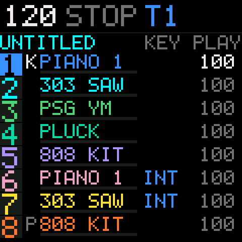
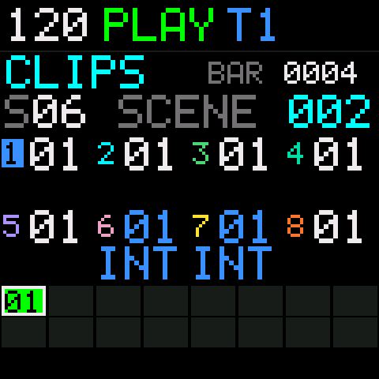
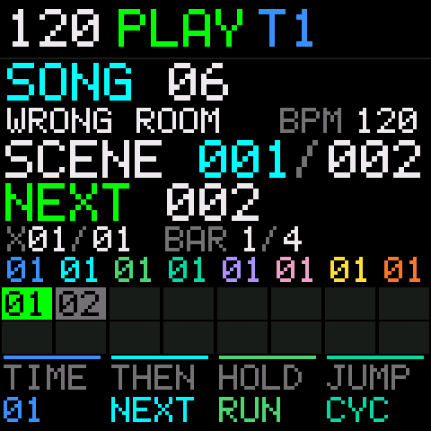
The top line, in large letters: the tempo; PLAY (green), STOP, PAUS, REC (red, a take runs), ARMD (record is armed), CNT4 (the count-in, quarter notes left), LOST (the outside clock stopped coming); and the selected track, T1 to T8, in its colour. Small, on the right: ARP while the track's arpeggiator is on, K8=0 in amber while the master volume is at zero, CPU! in amber while the SMK-37 is taking voices back to keep the sound clean (many parts on its own sounds at once; nothing is lost on MIDI out; if you only play outside gear, mute the internal sounds on the mixer and it stays off), and in amber *SNG (a clip or the song waits for a save), *PRJ (the project does) or *S+P (both).
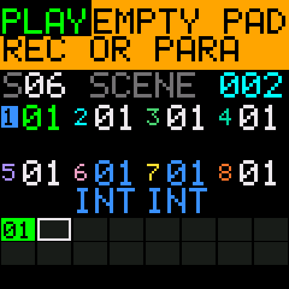
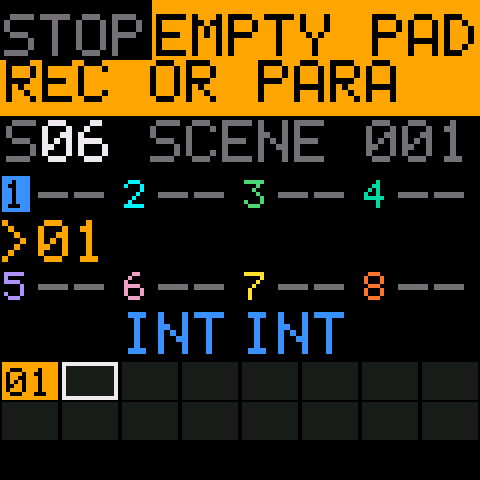
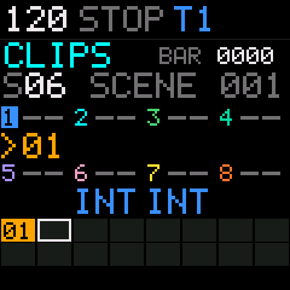
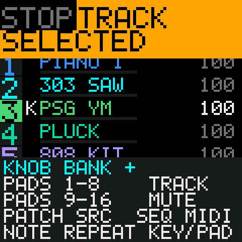
A message is an amber box across the top with large black letters, for about a second and a half, or until you press anything: a button, a pad, a key or a knob takes it away at once. PLAY / STOP / REC stays at its left end, in its own colour. It covers the rest of the top line (and the line or two under it when it is long), never the pads' cells. Where this guide writes a message with a dash (TRACK MUTED - SOUND + MIDI), the dash is a new line on the screen. Hold KNOB BANK to see its shortcuts in a grey box.
The help lines that older versions showed at the bottom of every page are gone from the screen. This section 4 says what every button does on every page.
4.1 Playing keys and pads
At start, the keys play track 1 on MIDI channel 1. The pads play track 8 on channel 10. On the overview a K stands before the track the keys play and a P before the track the pads play.
- Press PATCH until the overview shows eight tracks.
- Press a key. You hear track 1. MIDI goes out on channel 1. The lowest key is note 48 (C3).
- Press pad 1. You hear the 808 kick on track 8. MIDI goes out on channel 10, note 36.
- Press OCTAVE+ to move the keys up one octave each press. Press OCTAVE- to move down.
- Hold KNOB BANK and tap NOTE REPEAT to move the playing focus to the pads (tabby-v04.22; before that a tap on NOTE REPEAT alone). The top shows PAD DRUM and the bottom says PAD READY - PARA / FX. Do it again to go back to the keys.
- Hold KNOB BANK. The screen lists the shortcuts. Pads 1 to 8 (the upper row, left to right) select a track: on the overview its number in the list of eight tracks gets a blue box, and the first line of the shortcut list says TRACK SELECTED for a second (from tabby-v1.0). Pads 9 to 16 (the lower row) mute or unmute a track; that line then says TRACK MUTED - SOUND + MIDI or TRACK UNMUTED.
On the KNOB BANK list, the line NOTE REPEAT KEY-PAD is this switch.
Note repeat (tabby-v04.22)
- Hold NOTE REPEAT. The screen says NOTE REPEAT 1/16 and the button lights.
- Hold a key, or a pad on a page where the pads play (the overview). The note comes again and again, as loud as you played it, for as long as you hold both. Let NOTE REPEAT go and it stops.
- While you hold NOTE REPEAT, turn K1 for the rate: 1/4, 1/8, 1/16 or 1/32.
- It works on every page, also on CLIPS and STEP, where the keys play. The page does not change.
- Note repeat is the track's arpeggiator, switched on for as long as you hold the button. So it uses the ARP settings of the track (hold ARP to see them): RATE is the rate you set with K1, GATE the length of each note, SWING its swing. One held key repeats. Several held keys take turns, in the ARP's DIRECTION, and with RANGE above 1 OCT a key also climbs octaves: set RANGE to 1 OCT for plain repeats. A track whose ARP is already on is not changed (ARP IS ON - IT REPEATS).
- Press NOTE REPEAT first, then the key: a key that is already down when you press NOTE REPEAT is cut off. A take records the key you hold as one long note, not the repeats. The project shows as changed after a note repeat, because the ARP switch belongs to the project.
4.2 Choosing an FM6 (DX7) sound and its quick page
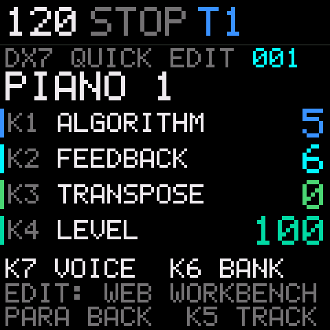
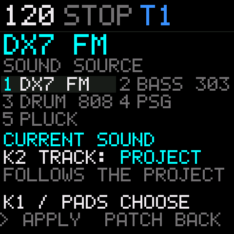
- On the overview, turn K5 to select the track you want.
- Hold KNOB BANK and press PATCH. (The < button does not open this page.) The SOUND SOURCE page opens.
- Turn K1 until DX7 FM is lit. Or press pad 1.
- Press the > button. The page says SOUND SOURCE APPLIED.
- Press PARA. The DX7 QUICK EDIT page opens. It shows the voice number out of 128 and the voice name.
- Turn K7 to choose the voice. Turn K6 to change the bank, A to D.
- Turn K1 for ALGORITHM, K2 for FEEDBACK, K3 for TRANSPOSE and K4 for LEVEL.
- Press PARA again to go back. A star near the top means the track has unsaved changes.
On any other sound, pressing PARA only says VOICE EDIT MOVED TO WORKBENCH. Other sounds are edited in the workbench.
4.3 Track roles: PROJECT, LIVE, OFF
- PROJECT: the track follows the project you load.
- LIVE: the track keeps its sound and held notes when you load another project.
- OFF: the track is switched off and frees its memory.
- Hold KNOB BANK and press PATCH. The SOUND SOURCE page opens for the selected track.
- Turn K2 right. TRACK goes PROJECT, then LIVE, then OFF. Turn K2 left to go back.
- The screen explains each choice under the line. Press PATCH to leave.
4.4 MIDI channels and output per track
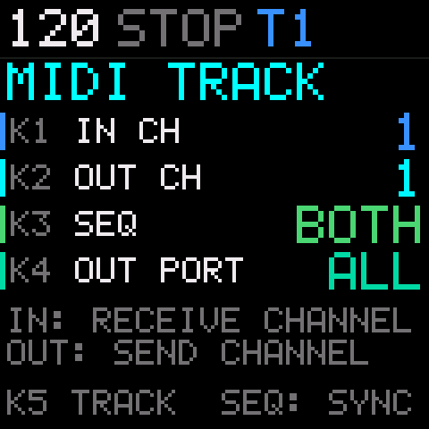
Each track has its own input channel, output channel, local or MIDI choice and port.
- Hold KNOB BANK and press SEQ. The MIDI TRACK page opens.
- Turn K5 to choose the track. The top line shows T1 to T8.
- K1 IN CH is the channel the track listens to from USB or Bluetooth.
- K2 OUT CH is the channel the track sends on. When it changes, the screen says MIDI SET - NOTES RELEASED.
- K3 SEQ: LOCAL plays the built-in sound only. BOTH plays the built-in sound and sends MIDI. MIDI sends MIDI only.
- K4 OUT PORT: ALL sends on USB, Bluetooth and the TRS jack. OFF sends nothing from this track. Turn K4 left for OFF.
- Press PATCH to leave.
The port setting is the same for all tracks. A song's own output channel for a track wins while the song plays. When the song stops, the device setting is back.
4.5 The SYNC / MIDI page: clock source, tempo, swing
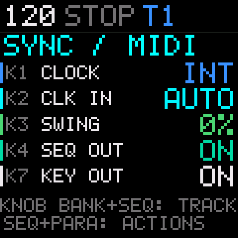
- Press SEQ on any page. The SYNC / MIDI page opens.
- K1 CLOCK: INT uses the SMK-37's own clock. MIDI waits for an outside clock. Turn K1 right for MIDI, left for INT.
- K2 CLK IN: AUTO, USB, BLE or DIN. Choose USB or BLE for a clock from outside. Do not choose DIN: the TRS jack receives nothing.
- K3 SWING: 0 to 50 percent. It is saved in the project.
- K4 SEQ OUT: OFF sends no notes and no clock. ON sends notes and clock. CLOCK sends clock and Start and Stop only.
- K7 KEY OUT: ON or OFF. It switches the MIDI out of the keys and pads.
- The tempo is not on this page. It says BPM: SET ON OVERVIEW K4.
With CLOCK on MIDI, the screen says WAIT MIDI CLOCK until a clock arrives. Songs cannot start then. Keep CLOCK on INT for songs.
Tempo: on the overview turn K4. Or tap the tempo: hold PATCH and tap SEQ. The first tap says TAP AGAIN / PATCH+SEQ.
4.6 The ACTIONS menu
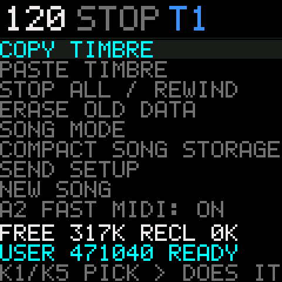
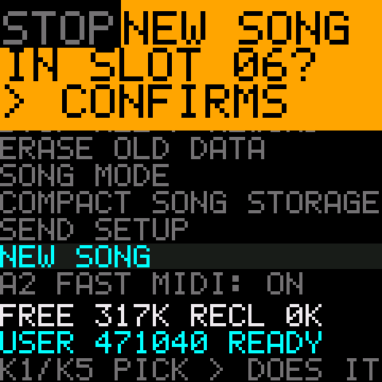
- Press SEQ and PARA together. The ACTIONS menu opens.
- Do not hold SEQ alone. It does not open ACTIONS. The SYNC / MIDI page of tabby-v04.2 says SEQ+PARA: ACTIONS (older firmware said HOLD SEQ: ACTIONS, which was wrong).
- Under the list the screen shows the storage: FREE and RECL (reclaimable), then USER 471040 READY.
- Turn K1 or K5 to choose an entry. Press the > button to run it. PATCH leaves.
- The entries are: COPY TIMBRE, PASTE TIMBRE, STOP ALL / REWIND, ERASE OLD DATA, SONG MODE, COMPACT SONG STORAGE, SEND SETUP, NEW SONG (tabby-v04.21; section 4.11) and A2 FAST MIDI: ON (or OFF). The last one switches fast MIDI for this session only.
- STOP ALL / REWIND stops all sound and rewinds. It is in the list; on its own it shows DONE.
4.7 Song mode: choose a song, play, recall a scene
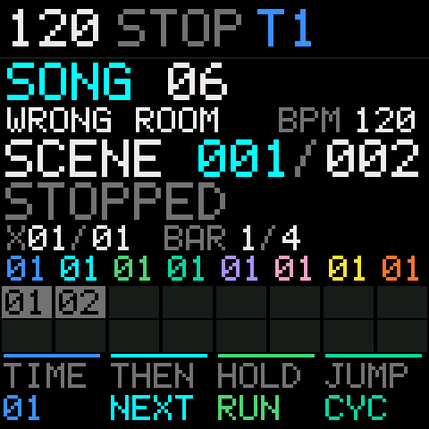
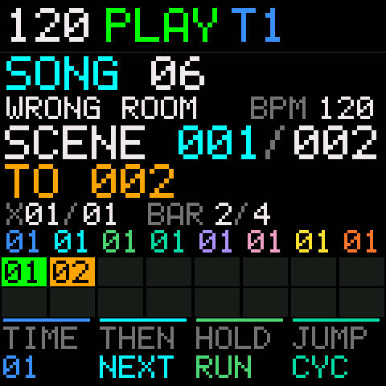
You need a song on the device first (section 5.3).
- Press SEQ and PARA together to open ACTIONS.
- Turn K5 until SONG MODE is lit. Press the > button. The SONG page opens.
- Turn K5 or K7 to choose song 1 to 16. An empty slot says NO SONG HERE - UPLOAD FROM THE WEB WORKBENCH.
- Make sure the project you want is loaded. The song uses whatever project is loaded. It does not load one for you.
- Press SEQ PLAY. The page says PLAYING. SCENE, X (the pass of the repeat) and BAR show where it is. NEXT shows what follows. Press SEQ PLAY again to stop. A scene is one row of the song: one clip for each track.
- To recall a scene: press a pad. The pad number is the scene on the pad page. The page shows TO SCENE n in amber and the pad blinks green. The scene starts on the next bar. Then the page shows the new SCENE and its pad is green.
- K4 switches JUMP between CYC (the next cycle) and END (the scene's end). not checked in simulator
- OCTAVE+ and OCTAVE- move the pad page by 16 scenes. not checked in simulator
- A pad with no scene, or a press while the song is stopped, says NO SUCH SCENE / NOT PLAYING.
- Press PATCH to leave the page. The song keeps playing.
With CLOCK on MIDI (tabby-v04.3.1 and later) SEQ PLAY arms the song and the master runs it: Start, Continue, Stop and Song Position Pointer, over USB or Bluetooth. See test T32. not checked in simulator
4.8 Clip launching (tabby-v04.7)
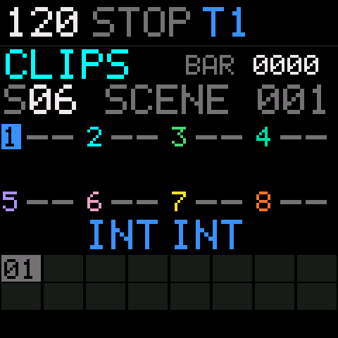
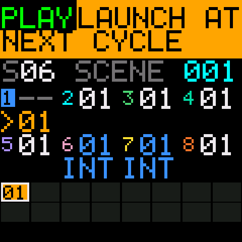
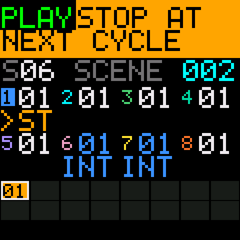
Clip launching lets one track loop one of its clips while the others follow the song. A clip is one pattern of one track. Each track has its own clips, numbered from 1. The pads show 16 of them at a time.
- Press BT. The CLIPS page opens, from any page. BT again goes back where you were. (On the SONG page SCALE opens it too.)
- Hold KNOB BANK and press a pad from 1 to 8 (the upper row) to choose a track, or turn K5. The page shows the track in its top line (CLIPS T1). From tabby-v1.0 the first line of the KNOB BANK list says TRACK SELECTED for a second; older firmware wrote that under the list, where it could not be seen while KNOB BANK was held.
- Look at the pads. Off: no clip. Dim white: a clip. Green: the clip that plays.
- Press SEQ PLAY if the song is not running. (Or press a pad first: it blinks, the screen says RESERVED FOR SEQ PLAY, and SEQ PLAY starts the song with that clip on the track.) Then press a white pad. It blinks green and the screen says LAUNCH AT NEXT CYCLE. On the next bar line the clip starts and the pad is green. The column for the track shows CLIP.
- To stop the track: press the green pad. It blinks red and the screen says STOP AT NEXT CYCLE. On the next bar line the track is silent. The column shows STOP.
- Changed your mind? Press the blinking pad again before the bar line. The screen says TAKEN BACK.
- To look at a clip without launching it: hold its pad for half a second. The screen says SELECTED ONLY - TAKEN BACK. The pad is bright white, and the SELECTED line shows its length.
- To bring the track back to the song: press CHORD. The screen says TO SCENES AT CYCLE. The track's cell shows >SC, then its clip number in white. KNOB BANK and CHORD together bring every track back.
- To mute a track: hold KNOB BANK and press pad 9 to 16 for track 1 to 8. The track's pads turn orange and the screen shows MUT under the track. Its notes stop on MIDI out too, and the clip keeps running, so unmuting brings it back in time. Blue pads and INT mean the other mute: the one from the mixer page, which silences only the SMK-37's own sound of the track and lets its MIDI notes go out.
- OCTAVE+ and OCTAVE- (or K6) show the next 16 clips. The page then shows PADS 17 - 32.
- Press SCALE for the SONG page, where the pads recall scenes. Press SEQ PLAY to stop the song.
"The next cycle" is the next bar line. A song imported from a 3/4 file uses 3/4 bars. The complete list of what every control does on these pages is in docs/CONTROL-MAP.md.
A jump on the SONG page cancels every launch and brings all tracks back to the song.
The step loop (tabby-v04.23)
- The song plays and you are on CLIPS. Hold NOTE REPEAT. The lower row of pads changes: pads 9 to 12 light amber, pads 13 to 16 go dark.
- Hold pad 9, 10, 11 or 12. Everything that plays repeats its last 1, 2, 4 or 8 steps (16th notes), over and over. The screen says STEP LOOP: LAST 4 STEPS and the pad is white.
- Let the pad go: STEP LOOP OFF. The song goes on where it would have been if you had not looped, in time with the master cycle. You can let NOTE REPEAT go earlier; the loop lasts as long as the pad.
- While NOTE REPEAT is down no pad launches a clip. The upper row still shows its clips.
- Every track that plays is looped, launched clips and tracks that follow the scenes alike. Clips, chains and scenes change underneath as they would; you hear the result when you let go. A note that is longer than the loop is played again each time round.
- Not while the song is stopped (STEP LOOP - PLAY FIRST) and not during a take (NOT DURING A TAKE). The loop starts within about a hundredth of a second of the pad; its length is exact.
4.9 Editing a clip: the STEP page (tabby-v04.8)
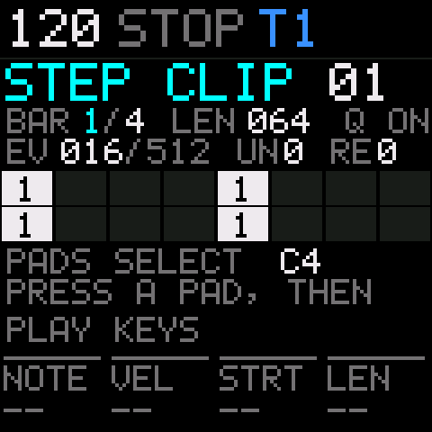
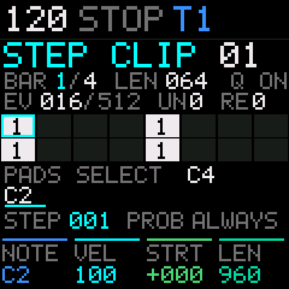
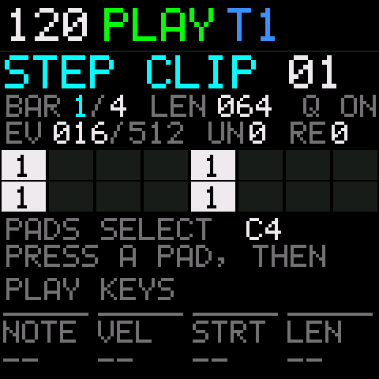
Here you change the notes of a clip on the SMK-37 itself. The pads say where, the keys say what.
- On the CLIPS page select a clip: hold its pad for half a second (it turns bright white), or launch it. Press PARA. The STEP page opens: STEP, the track, CLIP and its number, SAVED.
- The 16 pads are the 16 steps of one bar. Green pads hold notes. OCTAVE+ and OCTAVE- show the next and the previous bar.
- Press a pad. It turns cyan and the screen lists the notes on that step.
- Play a key. Its note is entered on the step, as loud as you played it, one step long. The screen says NOTE ENTERED, and *SNG (unsaved) appears in the top line. Play the same key again to remove it. Play more keys for a chord.
- Turn K2 for the velocity, K3 to move the note a little early or late, K4 for its length. With several notes on the step, K1 chooses which one (the > mark).
- Press the pad again to let go of the step. Now a key only sets the NOTE shown on the screen.
- For drums: press SCALE. The screen says PADS TOGGLE and the note. Now each pad press puts that note on its step or takes it off. Amber pads hold that note. SCALE again goes back.
- CHORD clears the selected step. FX undoes the last change, up to four. KNOB BANK and FX redo.
- To hear it: press SEQ PLAY. The song plays your change even though it is not saved. If the clip is launched and looping (go back with PARA, press its pad, come back with PARA), each change is heard at once (tabby-v1.4: a note you put on a step that is still ahead sounds in this pass; before, from the clip's next loop), and a white pad runs along with the music.
- To save: stop the song. Press the > button: CLIP SAVED. If you forget, the clip is saved by itself ten seconds after the song stopped. While the song plays the button says STOP TO SAVE.
- To throw the changes away: KNOB BANK and CHORD. The screen says EDITS DISCARDED.
- PARA goes back to the CLIPS page.
- To shift the whole clip (tabby-v04.21): hold KNOB BANK and press OCTAVE+. Every note moves one step later: CLIP SHIFTED ONE STEP LATER. The notes of the last step come round to step 1. KNOB BANK and OCTAVE- moves them one step earlier. Each note keeps its place inside its step. Several presses in a row are one undo: FX takes them all back. Without KNOB BANK the two buttons still change the bar.
Eight clips can be unsaved at a time (tabby-v1.3); they are saved together when the song is stopped. Unsaved changes are lost when you switch the SMK-37 off. Take a Full backup of a song before you edit it on the device if you want the old version back later.
4.10 Recording into a clip (tabby-v04.9)
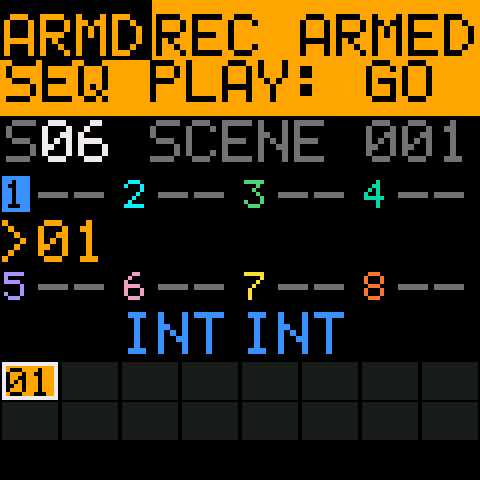
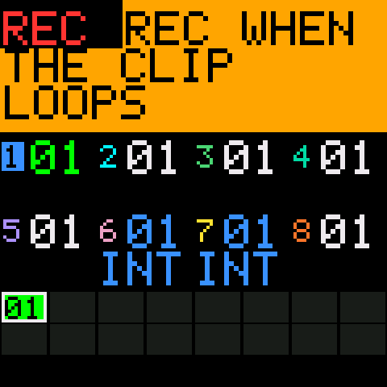
SEQ REC records what you play into a clip while the clip loops. What is already in the clip stays; you add to it.
- On the CLIPS page choose the track (KNOB BANK and pad 1 to 8) and select the clip: hold its pad for half a second.
- Press SEQ REC. If the song is stopped the screen says REC ARMED - SEQ PLAY: GO: press SEQ PLAY. If the song is playing, the clip starts looping at the next bar line and the screen says RECORDING. The SEQ REC lamp is lit.
- Play. Each note appears in the clip when you let the key go, and you hear it from the clip's next time round.
- Notes land on the nearest step (input quantize). To keep your own timing, hold KNOB BANK and press SEQ REC: INPUT QUANTIZE OFF. Do it again to switch it back on.
- Outside gear can record too: send notes to the SMK-37 over USB on the track's channel. Mod wheel, pitch bend and other controllers are recorded as well; a long sweep is thinned so it does not fill the clip.
- Press SEQ REC again: REC STOPPED. The clip is unsaved (*SNG in the top line). It is saved like a step edit: stop the song, and press the > button or wait ten seconds.
- Not happy with the take? Stop it with SEQ REC, press PARA for the STEP page and press FX: the whole take is gone. KNOB BANK and FX bring it back.
- To clear notes without stopping (tabby-v04.21): while the take runs, hold FX and hold a key. As the clip passes a note of that key, the note is taken out of the clip. Hold both for one pass of the clip to clear every note of that key; hold them over one beat to clear only what lies there. The key sounds while you hold it but is not recorded. Several keys can be held. Let FX go and you record again. During a take FX does nothing else: pressed alone it says HOLD FX + A KEY: CLEARS ITS NOTES. Cleared notes come back with the undo of the take (step 7).
A clip holds 512 events. If it fills up, recording stops by itself and the screen says CLIP FULL - REC STOPPED. Nothing you recorded is lost.
Stopping the song (tabby-v04.16): if you pressed SEQ REC while the song played and the take had not started yet (REC WHEN THE CLIP LOOPS), stopping the song takes it off. The screen says SONG STOPPED - REC OFF and the SEQ REC lamp goes out. A take you arm while the song is stopped still waits for SEQ PLAY.
- ARP: tap to switch the arpeggiator on or off for the track. Hold about 0.6 seconds for its settings.
- FX: reverb and delay sends for the selected track.
- BT: opens the CLIPS page (4.8). BT again goes back.
- SEQ REC: records into a clip on the CLIPS and STEP pages (4.10). Elsewhere it says SEQ REC: ON THE CLIPS OR STEP PAGE.
- PATCH and SEQ PLAY together: stop all sound and rewind. not checked in simulator
4.11 New clips, CLIP SETTING, click and count-in, storing a scene (tabby-v04.10)
A new clip
- On CLIPS press an empty pad. It lights dim cyan and the screen says EMPTY PAD - REC OR PARA.
- Press SEQ REC to record into a new clip there (4.10), or PARA to enter notes on the STEP page (4.9). The new clip is one bar long (one master cycle).
- The top line shows *SNG (unsaved). Stop the song and press the > button, or wait ten seconds: SAVED. The new clip is now part of the song.
A new song (tabby-v04.21)
- Go to SCENES (BT, then SCALE) with the song stopped. Turn K5 to a slot that says NO SONG.
- Press SEQ and PARA together. Turn K1 to NEW SONG and press the > button. The screen asks NEW SONG IN SLOT nn? Press the > button again. PATCH cancels.
- The screen says NEW SONG - HOLD A PAD, SEQ REC and shows CLIPS. The song is named NEW SONG, uses the project that is loaded and its tempo, and has one empty scene of 16 steps. It is stored at once.
- Make the first clip as above: hold an empty pad, press SEQ REC or PARA. Launch your clips and store them as scenes (below). Scene 1 stays empty; when you have stored a scene of your own, stop the song and delete scene 1 (FX twice on SCENES) if you do not want a silent start.
- A slot that holds a song is never replaced: SLOT HOLDS A SONG - K5 ON SCENES. While a song plays: STOP THE SONG FIRST. To name the song, read it in the workbench's song editor.
CLIP SETTING
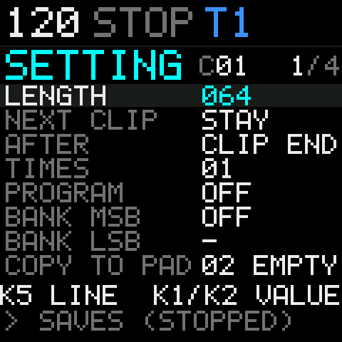
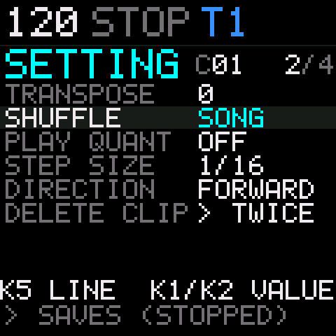
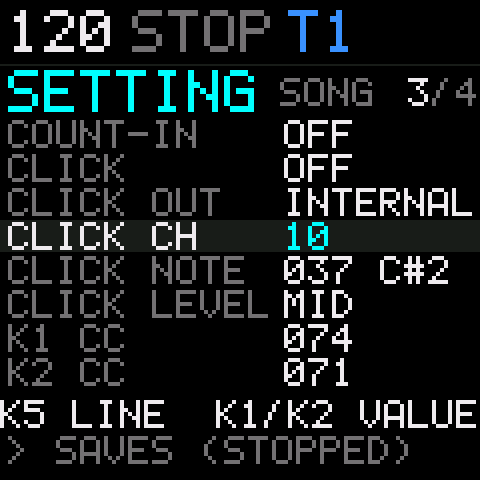
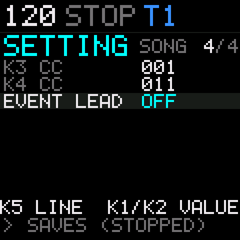
- On CLIPS select a clip (hold its pad) and press FX. The SETTING page has four pages of up to eight lines (tabby-v1.1). Page 1/4 is the clip: LENGTH, NEXT CLIP, AFTER, TIMES, PROGRAM, BANK MSB, BANK LSB and COPY TO PAD. Page 2/4 is more of the clip: TRANSPOSE, SHUFFLE, PLAY QUANT (play quantize), STEP SIZE, DIRECTION and DELETE CLIP. Pages 3/4 and 4/4 are the song: COUNT-IN, CLICK, CLICK OUT, CLICK CH, CLICK NOTE, CLICK LEVEL, K1 CC to K4 CC (the knobs' controller numbers) and EVENT LEAD. K5 walks through all the lines; the page changes by itself.
- Turn K5 to choose a line. Turn K1 to change it; K2 changes it by 16.
- LENGTH is the clip's length, 1 to 128 steps. Making it shorter removes the notes past the new end; FX on the STEP page brings them back.
- COPY TO PAD: turn K1 to an empty pad and press the > button. The copy is open and unsaved. A clip you changed must be saved before you copy it.
- TRANSPOSE (tabby-v04.15): K1 moves the clip's notes up or down, 12 semitones at most. The clip itself is not changed: 0 plays it as it was. You hear it from the clip's next loop.
- SHUFFLE (tabby-v04.17): SONG means the clip swings as the song does (the SWING of the SYNC / MIDI page, when the song follows it). Turn K1 right for the clip's own shuffle, 0% to 50%: every second 16th step comes that much of a step late. 0% plays this clip straight even in a song that swings. You hear it from the clip's next loop.
- PLAY QUANT (play quantize, tabby-v04.17): OFF, 1/16, 1/8 or 1/4. When the clip plays, every note starts on the nearest line of that grid. The notes in the clip are not moved: OFF plays your own timing again. Controllers are not moved. Use it to tighten a loose take without losing it.
- STEP SIZE (tabby-v04.19): what one step of the clip lasts. 1/16 is what every clip had until now. 1/8 plays the clip at half speed: a clip of 16 steps then lasts two bars. 1/32 plays it at double speed. 1/16T and 1/8T are triplet steps: a clip of 12 steps at 1/16T lasts half a bar, three steps to each 8th note. K1 only stops at sizes that give the clip a whole number of 16ths, from 1 to 128; if a size is passed over, change LENGTH first (triplets need a length that divides by 3). The line shows what the clip then plays, for example = 32 16THS. On the STEP page the pads are still the clip's own steps, and a take is recorded in them.
- DIRECTION (tabby-v04.20): FORWARD, REVERSE or FWD+REV. REVERSE plays the clip's steps from the last to the first; each note keeps its place inside its step and its length. FWD+REV plays the clip forwards and then backwards, so it lasts twice as long; if that would be more than 128 steps or 512 events the line shows LONG and the clip plays forwards. The clip itself is not changed: FORWARD plays it as before. On the STEP page the pads are still the clip's own steps: the running light walks backwards, and a take is recorded where you hear it in the clip.
- DELETE CLIP (tabby-v04.15): stop the song, turn K5 to DELETE CLIP and press the > button. The screen says > AGAIN - DELETES THE CLIP. Press it again within two seconds: CLIP DELETED - SAVE THE SONG. A clip that a scene uses is not deleted; the screen names the scene.
- FX goes back to CLIPS.
Every clip loops at its own length: a 1-bar clip in a 4-bar scene plays four times. Songs you imported play as before.
Click and count-in
- On the SETTING page turn K5 to CLICK. K1 chooses OFF, REC ONLY (when recording) or ALWAYS.
- CLICK OUT: INTERNAL is a click on the SMK-37's audio output. MIDI sends a note on CLICK CH and CLICK NOTE (channel 10, note 37 unless you change them). BOTH does both. If your audio goes to the house mix, use MIDI.
- COUNT-IN: OFF, 1, 2 or 4 CYCLES. Arm a take with SEQ REC while the song is stopped, then press SEQ PLAY: the click counts in, the screen shows COUNT-IN and the beats left, then the song starts.
- CLICK LEVEL (tabby-v04.14): LOW, MID or HIGH for the internal click. Each step is twice as loud. A song you never set is on MID; HIGH is about as loud as a note.
- These settings belong to the song and are saved with it. A song you never set has no click.
- EVENT LEAD (tabby-v1.0.2), the last line of page 4/4: OFF, 1/32, 1/16, 1/8 or 1/4. It is how long before a scene's downbeat the scene's program changes, bank select and controllers go out. OFF is what every song has until you set it: they go out at the downbeat, just before the scene's first notes, as in every version before. Why you might turn it on: on one DIN cable those messages pass ahead of the first notes, about 0.8 ms each, so the first notes come late (14 ms behind 17 messages). With a lead they have left the cable before the downbeat and the notes are on time. What it costs: the synth changes its sound that much before the downbeat, so the tail of the scene before, its last notes still sounding, is heard on the new sound. Use the shortest lead that is enough (1/32 at 120 BPM is 62 ms, room for some 70 messages on a cable) and leave it OFF on songs where the change must not be heard early. A device's own waiting time from the rig profile (the H90's 255 ms, for example) is kept and counts from when its program change goes out; the lead comes in front of it. There is no lead at SEQ PLAY: the first scene's messages go out with the start, so use SEND SETUP before you start. A change of the setting is heard from the scene after the next. It is saved with the song.
Storing a scene
- Let the song play. Launch the clips you want on their tracks.
- Go to SCENES (SCALE). Keep SEQ REC down and press an empty pad. The screen says STORED AS A NEW SCENE. The new scene is added after the last one.
- Press its pad to recall it later. It repeats until you recall another scene.
- A pad that already holds a scene is never written over. Save the song when stopped (> button).
Deleting and moving a scene (tabby-v04.16)
- Stop the song. On SCENES press the pad of the scene: it blinks. That is the selected scene. With no pad blinking, scene 1 is selected.
- To delete it: press FX. The screen says FX AGAIN DELETES SCENE and its number. Press FX again within two seconds: SCENE DELETED - SAVE THE SONG. The scenes after it move one pad earlier. Its clips stay in the song.
- To move it: hold PARA and turn K1. One click left moves the scene one pad earlier, one click right one pad later: SCENE MOVED - SAVE THE SONG. It stays selected, so you can keep turning.
- A scene you stored while playing sits after the last one. Stop, select it and move it to where it belongs in the song.
- The change is saved with the song: when you press the > button, by itself ten seconds after the last change while stopped, or when you choose another song. There is no undo for a deleted scene. Its clips are still in the song, so you can build it again: play, launch its clips, store them as a new scene and move it back.
- The song keeps at least one scene: THE LAST SCENE STAYS. While the song plays: STOP THE SONG FIRST.
- In a song imported from a MIDI file a clip can take its length from the first scene that uses it. If deleting or moving a scene would change that, the screen says KEPT - IT SETS A CLIP'S LENGTH (or NOT MOVED). Open that clip's CLIP SETTING, turn LENGTH one step and back, and save: the clip then keeps its own length and the scene is free.
4.12 Clip chains (tabby-v04.11)
- On CLIPS select a clip and press FX. After LENGTH the SETTING page has NEXT CLIP, AFTER and TIMES.
- NEXT CLIP: turn K1. STAY means no chain. STOP stops the track. CLIP n goes on with that clip of the same track; K1 only stops at pads that hold a clip.
- AFTER: CLIP END, or a number of steps (K2 changes it by 16). TIMES: how many times before the chain is due.
- Save (stop, > button). Launch the clip from its pad. Under the track's clip the CLIPS page shows +05 (clip 5 is next) or +ST.
- The chain only runs on a track you launched by hand. A track that follows the scenes ignores it. A pad press, CHORD or a scene recall ends it.
4.13 The scene chain (tabby-v04.12)
- Open SCENES (SCALE from CLIPS). The line LEN shows the length of the scene that plays, in master cycles, then THEN and CHAIN.
- K1 changes how many times the scene plays before the next one. K2 chooses THEN NEXT (the next scene follows by itself) or THEN STAY (it repeats until you recall another).
- K3 right: CHAIN HELD. The scene that plays repeats until you turn K3 left again (CHAIN RUNS) or press a scene pad.
- While the song is stopped, press a scene pad: RESERVED FOR SEQ PLAY. SEQ PLAY starts there. The knobs then work on that scene.
- A pad always wins: the song jumps to its scene and goes on from there. Save the song when stopped.
4.14 A clip's program and bank; the controller knobs (tabby-v04.13)
- On CLIPS select a clip and press FX. After TIMES the page has PROGRAM, BANK MSB and BANK LSB.
- PROGRAM: OFF or 1 to 128. BANK MSB: OFF or 0 to 127; BANK LSB works once BANK MSB has a value. Save.
- When the track enters the clip (its pad, a chain, a scene), the bank select and the program change go out on the track's channel, just before the clip's first notes. They go to MIDI out only.
- On the CLIPS page turn K1 to K4: they send controllers 74, 71, 1 and 11 for the selected track. The screen shows the value.
- Press SEQ REC and turn a knob: the movement is recorded into the clip and plays back in the loop.
- To send other controllers (tabby-v04.14): press FX, turn K5 to K1 CC (page 3/4) and choose a number from 0 to 127 with K1 (K2 moves by 16). The same for K2 CC, K3 CC and K4 CC. Save. The numbers belong to the song.
4.15 Saving a project, and the STOP TO SAVE rule
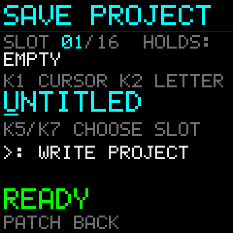
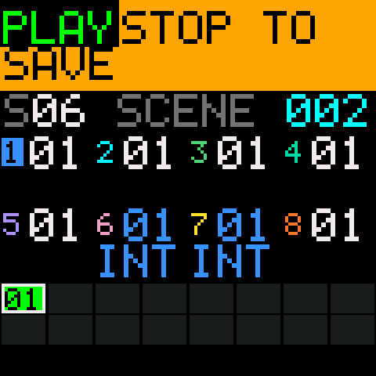
Your sounds, mixer and MIDI settings live in a project. There are 16 project slots.
- Press the > button. The SAVE PROJECT page opens. It shows USER 01/16 and a working name.
- Turn K5 or K7 to choose the slot. K1 moves the cursor in the name and K2 changes the letter.
- Press the > button again. The screen says PROJECT SAVED and goes back to the overview.
- PATCH cancels without saving.
STOP TO SAVE: while a song or pattern plays, the device writes nothing to flash. If you press the > button a second time while something plays, the page says STOP TO SAVE in orange. Stop the song, then save. Changes you made while playing are kept and can be saved after the stop.
The same rule holds for ERASE and COMPACT in ACTIONS and for any write from the workbench.
4.16 Loading a project
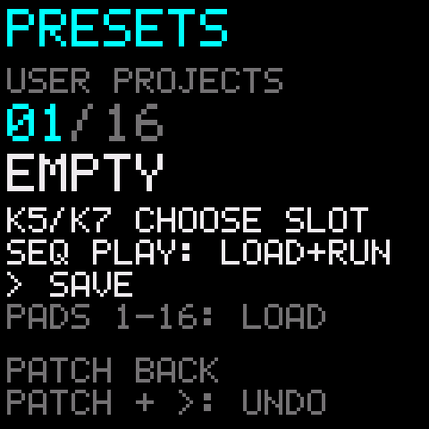
- On the overview, press PATCH. The PRESETS list opens.
- Turn K5 or K7 to pick a project, or press a pad from 1 to 16 to load it directly.
- Press SEQ PLAY to load and run. An empty slot says EMPTY SLOT - CHOOSE ANOTHER.
- PATCH goes back. PATCH with the > button undoes the last change.
4.17 Erasing old data
After a storage move, the device can announce OLD DATA - SEE ACTIONS for six seconds. Then the SONG page cannot write or play songs. The ACTIONS first line says SONG OLD DATA.
- Press SEQ and PARA together. Turn K1 or K5 to ERASE OLD DATA.
- Press the > button. The screen says ERASE OLD DATA? and, at the bottom, > CONFIRM and PATCH CANCEL.
- Press the > button again. The page says DONE and the storage line changes to USER 471040 READY.
- Nothing is erased without the second press. Projects, tunings and settings are never touched.
4.18 Other useful controls
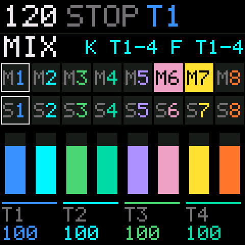
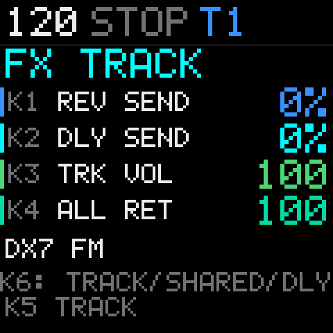
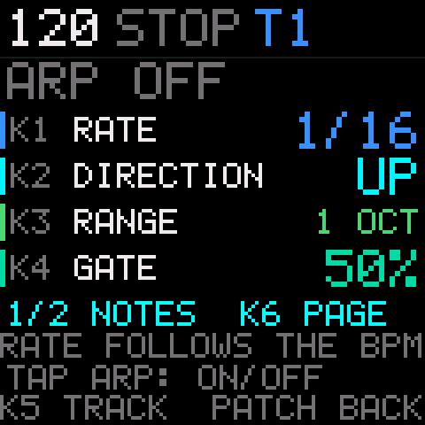
- GLOBE: tap to open the mixer. Pads 1 to 8 mute. Pads 9 to 16 solo. Tap GLOBE again to leave.
- FADER BANK: moves the four faders between tracks 1 to 4 and 5 to 8. Move a fader through its shown level to take over.
5. USING THE WORKBENCH
Open https://seattleuser0.github.io/classic-tabby/ in desktop Chrome. The tabs are Play & edit, Projects & sounds, Device update and Help. Help has 22 chapters. Chapter 00 says what changed in tabby-v04.
The Play & edit tab is a simulator of the device. It runs the same firmware code in the browser. Use it to try things safely.
5.1 Connecting
- Plug in the SMK-37 and close other MIDI programs.
- Open the Projects & sounds tab.
- Click Connect project library. Allow MIDI with SysEx when Chrome asks.
- The page reads what the device can do. The Song mode group and the Bluetooth settings group become usable.
not checked in simulator
5.2 Importing a MIDI file into a song
- In Projects & sounds, open Import MIDI file (Classic Tabby).
- Choose the .mid file. The summary shows format, tempo, tracks and bars. Warnings show under it.
- Assign each part to a track from 1 to 8, or skip it. Set OUT CH per track to the channel of the gear that should play it.
- Check the options. Quantize is off by default, which keeps the timing exact. Bars per row offers lengths that stay on bar lines.
- Check the resulting song and the list called Dropped or changed.
- Choose the Song slot. Click Write song and confirm. The panel shows the plan and the time taken.
- If the slot already has a song, the page deletes it first and says so. Click Export .tabby first if you want to keep it.
- Scenes (tabby-v04.6): with the box "write the song as scenes and clips" ticked (it is ticked at the start) the song is stored as scenes with clips of up to 8 bars and the master cycle set to one bar of the file. Untick it to write rows, which older firmware can play.
- Chords of more than four notes, controller events and long rows (tabby-v04.5): the importer keeps every note of a chord. With the box "keep controller, pitch bend and aftertouch events in the clips" ticked (it is ticked at the start) it also keeps the mod wheel, sustain pedal, pitch bend and aftertouch of each part, thinned to one value per 1/8 step. Bars per row offers up to 128 steps. A part that needs any of this is stored as a "v3 clip"; the summary says how many. The step editor in Song mode cannot show a v3 clip, but it keeps it when you write or export the song. A song with v3 clips or long rows needs tabby-v04.5 on the SMK-37; the page refuses to write it to older firmware and says why.
The target is chosen in the Song mode group: Device (project library) or Browser simulator. The simulator is safe to try first.
5.3 Writing a song to the device
- Connect the project library (5.1). Stop anything playing on the device.
- Open Song mode (Classic Tabby). Set Target to Device.
- Choose the Song slot. Click Read song to see what is there.
- Click Write song. The page writes the record, then every block, then reads it back and compares. Audio pauses a little at the end of each batch. Write songs before a set, not during one.
- On the device, open SONG MODE (4.7) and play it.
- Storage status tells you how much room is left. After many rewrites, run COMPACT SONG STORAGE in ACTIONS to reclaim old blocks.
(writing to a real device). Writing to the Browser simulator target is the same path. not checked in simulator
5.4 Rig profiles and row events
The rig tells the workbench which device is on each MIDI channel. Then the row event editor shows preset names instead of numbers.
- Open Rig setup (Classic Tabby). The built-in Wrong Room profile is read-only. Click Copy to my rig to get one you can change.
- Each line is one MIDI channel: Device, Name, Gap ms, Lead ms, Numbering and Names. Gap ms is the pause a device needs after a program change. Lead ms sends the program change that long before the bar.
- Export rig (.json) and Import rig save and load your rig. It is kept in this browser.
- In Song mode, under the row table, choose a Row. Use Add on channel and the type: Program, Control change or Gap in ms.
- A row holds up to 32 events. A song holds up to 292. Row 1 is marked SEND SETUP.
- Events go to outside gear only. They do not change the SMK-37's own sounds.
- On the device, SEND SETUP in ACTIONS sends row 1's events at once. With the song stopped and loaded, the notice says SETUP SENT - ROW 1 EVENTS. With the song playing it says STOP THE SONG FIRST. With no song loaded it says NO SONG LOADED. not checked in simulator
5.5 Full backup and restore
Make a Full backup before every firmware update.
- In Projects & sounds, open Full backup and restore (Classic Tabby). Stop any song first.
- Click Full backup. A file is saved on the computer. It holds the 16 project slots, device settings, every song, and your My rig profile. It does not hold Bluetooth pairings.
- To restore: choose the Backup file, click Full restore, and confirm. It checks the whole file before it writes anything.
- At the end it reads everything back. It shows PASS or the first difference. Click Verify against file any time to check again.
- If the page cannot read a song, the backup stops and says so: STOPPED at song 7: this page cannot read it. No file was made and nothing on the device changed. This happens when the song was saved by newer firmware than the page you opened. Open the page of the firmware that is on the device (the builds list has every page) and make the backup there.
A factory restore overwrites the last 40 KB of song storage. Export your songs as .tabby files first.
not checked in simulator
5.6 The Diagnostics panel
- In Projects & sounds, open Diagnostics (timing counters and control-loop profile).
- Click Reset counters. Play a song for the time you want to measure.
- Click Read counters. Click Copy as text to paste the numbers into a message.
- The counters show the control loop period, the longest flash erase and write, the time from a key press to MIDI, and busy time and lost ticks.
- One line starts with "flash part". It names the flash chip inside the SMK-37: its JEDEC ID, like 0xEB6014, and its size, 1024 KiB. The device read them when it started. The line is a report for problem reports. The device works the same with any chip, and nothing checks this line. The simulator shows "flash part: none (simulator)".
not checked in simulator
5.7 Bluetooth settings
In Projects & sounds, the Bluetooth settings group has Bluetooth on, Bluetooth audio, the BLE MIDI role (DEVICE or HOST) and Forget MIDI pairs. Each change is written at once. Cables are better than Bluetooth for notes and clock.
not checked in simulator
6. TEST CHECKLIST
Mark each test PASS or FAIL. Write what you saw. Run a test only when its set-up is ready. The tests are grouped by area.
Tests with real gear are in group G.
GROUP A. START UP
T1. Boot screen and version
Set up: SMK-37 Pro on USB power, nothing else.
- Switch on. not checked in simulator
- Watch the boot screen.
You should see: SMK37, OFFICIAL OPEN and the version line. Then the the overview.
Result: PASS / FAIL Notes:
T2. The overview
Set up: T1 done.
- Look at the overview.
You should see: 8 tracks listed, BPM 120 or your project's tempo, a K before track 1 and a P before track 8. The top line shows the tempo, STOP and T1 in large letters.
Result: PASS / FAIL Notes:
T3. Storage state
Set up: T2 done.
- Press SEQ and PARA together.
You should see: ACTIONS with FREE and RECL and the line USER 471040 READY under the list. Press PATCH to leave.
Result: PASS / FAIL Notes:
GROUP B. PLAYING
T4. Keys
Set up: the overview.
- Press the lowest key, then a key in the middle.
You should hear: track 1's sound. The outside MIDI shows channel 1, lowest key note 48. (Check the MIDI note on a monitor if you have one.) (the monitor) not checked in simulator
Result: PASS / FAIL Notes:
T5. Pads
Set up: the overview.
- Press pad 1, then pad 2.
You should hear: the 808 drum sounds on track 8. MIDI goes out on channel 10, pad 1 is note 36.
Result: PASS / FAIL Notes:
T6. Octave buttons
Set up: the overview.
- Press OCTAVE+ twice. Press a key.
- Press OCTAVE- four times. Press the same key.
You should hear: two octaves higher, then two octaves lower than the start. MIDI notes: start 60, then 84, then 36 for the same key.
Result: PASS / FAIL Notes:
T7. Keys and pads focus
Set up: the overview.
- Hold KNOB BANK and tap NOTE REPEAT.
- Press pad 1.
- Hold KNOB BANK and tap NOTE REPEAT again.
You should see: PAD DRUM at the top and PAD READY - PARA / FX at the bottom after step 1. Pad 1 still plays the kick. After step 3 the top shows KEY PLAY again.
Result: PASS / FAIL Notes:
T8. Mute with KNOB BANK and a pad
Set up: the overview.
- Hold KNOB BANK. Press pad 9. Release KNOB BANK.
- Hold KNOB BANK. Press pad 9 again.
You should see: track 1 shows MUTE, then the mute goes away. The screen says TRACK MUTED - SOUND + MIDI, then TRACK UNMUTED. The overview shows MUTE in amber for this mute and INT in blue for a mute set on the mixer page.
Result: PASS / FAIL Notes:
T9. Mixer
Set up: the overview.
- Tap GLOBE.
- Press pad 1.
- Tap GLOBE again.
You should see: the mixer with MUTE and SOLO cells. Pad 1 mutes track 1. The overview comes back after step 3.
Result: PASS / FAIL Notes:
GROUP C. SOUNDS AND TRACKS
T10. Choose the FM6 sound
Set up: the overview.
- Turn K5 to select track 3 (PSG).
- Hold KNOB BANK, press PATCH. Turn K1 left to DX7 FM. Press the > button.
You should see: SOUND SOURCE page with DX7 FM lit, then SOUND SOURCE APPLIED on the overview. Track 3 now says DX7 FM. To hear it, select track 3 and play the keys.
Result: PASS / FAIL Notes:
T11. FM6 quick page
Set up: T10 done, track 3 selected.
- Press PARA.
- Turn K7 three clicks. Turn K6 one click. Turn K1 two clicks.
- Press PARA.
You should see: DX7 QUICK EDIT. The voice number changes with K7. The bank changes with K6. ALGORITHM changes with K1. A star shows at the top. Back on the overview, the track shows EDITED.
Result: PASS / FAIL Notes:
T12. Other sounds say "moved to workbench"
Set up: the overview, track 2 (BASS 303) selected.
- Press PARA.
You should see: VOICE EDIT MOVED TO WORKBENCH.
Result: PASS / FAIL Notes:
T13. Track roles
Set up: the overview.
- Hold KNOB BANK, press PATCH. Turn K2 right once, then once more.
You should see: PROJECT, then LIVE with KEEP SOUND ON PROJECT LOAD, then OFF with TURN K2 LEFT TO ENABLE. Turn K2 left twice to get back to PROJECT.
Result: PASS / FAIL Notes:
T14. Input and output channels per track
Set up: the overview.
- Hold KNOB BANK, press SEQ. Turn K5 to track 4.
- Turn K2 three clicks.
- Turn K1 two clicks.
You should see: the MIDI TRACK page. OUT CH changes by three. IN CH changes by two. The screen says MIDI SET - NOTES RELEASED after a change. A key played on track 4 now goes out on the new channel. (the outside gear) not checked in simulator
Result: PASS / FAIL Notes:
T15. LOCAL, BOTH, MIDI
Set up: T14 done. Track 4 on the MIDI TRACK page.
- Turn K3 right once.
You should see: SEQ changes from BOTH to MIDI. The screen says SEQ OUTPUT UPDATED. The track makes no sound inside any more but still sends MIDI.
Result: PASS / FAIL Notes:
T16. Output port off
Set up: MIDI TRACK page.
- Turn K4 left once.
You should see: OUT PORT shows OFF. Nothing is sent from this track.
Result: PASS / FAIL Notes:
GROUP D. SYNC / MIDI PAGE AND TEMPO
T17. The SYNC / MIDI page
Set up: the overview.
- Press SEQ.
You should see: SYNC / MIDI with CLOCK, CLK IN, SWING, SEQ OUT, KEY OUT and the line BPM: 120 SET ON OVERVIEW K4.
Result: PASS / FAIL Notes:
T18. Clock source
Set up: T17 done.
- Turn K1 right once.
- Turn K2 right once.
- Turn K1 left once.
You should see: CLOCK MIDI and BPM WAIT after step 1. CLK IN USB after step 2. CLOCK INT after step 3 and the tempo back.
Result: PASS / FAIL Notes:
T19. Swing and SEQ OUT
Set up: SYNC / MIDI page.
- Turn K3 five clicks right.
- Turn K4 right once.
You should see: SWING 5%. SEQ OUT CLOCK. Set SEQ OUT back to ON.
Result: PASS / FAIL Notes:
T20. Tempo
Set up: the overview.
- Turn K4 five clicks right.
- Hold PATCH and tap SEQ twice.
You should see: BPM goes up by five. The first tap says TAP AGAIN / PATCH+SEQ. The second tap sets a tempo from your tapping.
Result: PASS / FAIL Notes:
GROUP E. ACTIONS, PROJECTS AND SAVING
T21. The ACTIONS menu
Set up: the overview.
- Press SEQ and PARA together.
- Turn K5 right until you have seen all nine entries.
You should see: COPY TIMBRE, PASTE TIMBRE, STOP ALL / REWIND, ERASE OLD DATA, SONG MODE, COMPACT SONG STORAGE, SEND SETUP, NEW SONG, A2 FAST MIDI: ON. The last line says K1/K5 PICK > DOES IT.
Result: PASS / FAIL Notes:
T22. Holding SEQ alone
Set up: the overview.
- Hold SEQ alone for two seconds.
You should see: SYNC / MIDI opens, not ACTIONS. This is expected. Older firmware showed the wrong text HOLD SEQ: ACTIONS; tabby-v04.2 shows SEQ+PARA: ACTIONS.
Result: PASS / FAIL Notes:
T23. Save a project
Set up: the overview. Nothing playing.
- Press the > button.
- Turn K7 two clicks.
- Press the > button again.
You should see: SAVE PROJECT with USER 01/16 and a name. Slot 03 after step 2. PROJECT SAVED after step 3.
Result: PASS / FAIL Notes:
T24. STOP TO SAVE
Set up: a song loaded and playing (T29).
- Press the > button. Press it again.
You should see: SAVE PROJECT, then STOP TO SAVE in orange. Nothing is written. Stop the song and save again: PROJECT SAVED.
Result: PASS / FAIL Notes:
T25. Load a project
Set up: T23 done. The overview.
- Press PATCH. Press pad 3.
You should see: the PRESETS list, then your saved project loaded.
Result: PASS / FAIL Notes:
T26. Erase old data
Set up: only if the device says OLD DATA IN SONG STORAGE. If it does not, write "not needed".
- Press SEQ and PARA together. Turn K1 or K5 to ERASE OLD DATA. Press the > button.
- Check the screen. Press the > button again.
You should see: an amber box, ERASE OLD DATA? and > CONFIRMS. After the second press, DONE and USER 471040 READY.
Result: PASS / FAIL Notes:
GROUP F. SONGS
T27. Import a MIDI file and write it to the browser simulator
Set up: Chrome, the workbench, and any .mid file of your own.
- Projects & sounds, Song mode, Target: Browser simulator.
- Import MIDI file. Assign parts. Write song to slot 1.
- On the Play & edit tab, press the Song mode shortcut.
You should see: the plan and a read-back check with no difference. Then the SONG page with the song name. (the import screens; the SONG page itself was checked) not checked in simulator
Result: PASS / FAIL Notes:
T28. Write the song to the device
Set up: device connected (5.1), nothing playing.
- Target: Device. Write song to slot 1.
You should see: the page writes the record and the blocks, then reads back and says it matches. A short audio pause is normal.
Result: PASS / FAIL Notes:
T29. Choose a song and play it
Set up: T28 done. Device on the overview. CLOCK on INT.
- Press SEQ and PARA together. Turn K5 to SONG MODE. Press the > button.
- Turn K5 right to song 2, then left to song 1.
- Press SEQ PLAY.
You should see: SONG 01 and the name. Song 2 empty says NO SONG HERE - UPLOAD FROM THE WEB WORKBENCH. After SEQ PLAY: PLAYING, SCENE, X, BAR and NEXT change as it goes.
Result: PASS / FAIL Notes:
T30. Recall a scene
Set up: T29 playing, a song with at least 3 scenes (rows).
- Press pad 3.
You should see: TO SCENE 003 in amber and pad 3 blinking green, then SCENE 003 on the next bar with pad 3 green. All tracks change together.
Result: PASS / FAIL Notes:
T31. Stop the song
Set up: T29 playing.
- Press SEQ PLAY.
You should see: the top line says STOP and the SONG page STOPPED. Every note is released. MIDI Stop is sent once.
Result: PASS / FAIL Notes:
T32. Song follows an external clock (tabby-v04.3.1)
Set up: a DAW or MIDI app on the MacBook sends MIDI clock, Start, Stop and Continue to the SMK-37 over USB. SYNC / MIDI with CLOCK on MIDI (K1). Song selected on the SONG page.
- Press SEQ PLAY on the SONG page. The page says ARMED: START?
- Press play in the DAW. At its first clock pulse the song starts and the page says FOLLOWING. The notes stay with the DAW's beat.
- Change the DAW's tempo. The song keeps up.
- Press stop in the DAW. The page says STOP BY MASTER and every note is released. Press continue: it goes on from where it stopped.
- Pause the clock for one second (or unplug USB for one second and plug it back). The page says HOLD: NO CLOCK and the notes stop; when the clock returns, it carries on from the same place.
- Pause the clock for five seconds. The page says LOST - CONTINUE. When the clock returns, the song stays silent until you press continue or start.
You should see and hear: the song following the DAW as described. not checked in simulator
Result: PASS / FAIL Notes:
T33. Launch a clip on one track
Set up: T29 playing, a song where track 1 has at least two clips (the pads on the CLIPS page show two white or green pads).
- Press BT. Hold KNOB BANK and press pad 1. Release KNOB BANK.
- Press a white pad.
- Wait for the next bar.
You should see: CLIPS T1 (and TRACK SELECTED at the top of the KNOB BANK list while you hold KNOB BANK), then LAUNCH AT NEXT CYCLE and the pad blinking green. After the bar line the pad is green and the column says CLIP. The other tracks go on with the song.
Result: PASS / FAIL Notes:
T34. Stop and bring a track back
Set up: T33 done.
- Press the green pad.
- Wait a bar. Press CHORD.
- Wait a bar.
You should see: STOP AT NEXT CYCLE, the pad blinking red and >ST, then --. TO SCENES AT CYCLE and >SC, then the clip number in white.
Result: PASS / FAIL Notes:
T35. A jump cancels launches
Set up: T33 done, track 1 launched.
- Press SCALE to go to the SONG page. Press a pad.
You should see: after the landing, every track follows the song again. not checked in simulator
Result: PASS / FAIL Notes:
T36. Compact the storage
Set up: song storage with some old blocks (Storage status shows RECLAIM above zero), nothing playing.
- Press SEQ and PARA together. Turn K5 to COMPACT SONG STORAGE. Press the > button. Press it again.
You should see: COMPACT SONG STORAGE? and then COMPACT in the storage line for a few seconds. RECL goes to 0. not checked in simulator
Result: PASS / FAIL Notes:
GROUP G. WORKBENCH
T37. Connect the project library
Set up: device on USB, close other MIDI programs.
- Projects & sounds, Connect project library.
You should see: the page connects, reads the capabilities and shows the Song mode and Bluetooth settings groups. not checked in simulator
Result: PASS / FAIL Notes:
T38. Full backup
Set up: T37 done. Nothing playing.
- Full backup.
You should see: a backup file saved on the computer. Keep it. not checked in simulator
Result: PASS / FAIL Notes:
T39. Full restore and verify
Set up: T38 done. Nothing playing.
- Choose the file. Full restore. Confirm.
- Click Verify against file.
You should see: PASS at the end of the restore and after Verify. not checked in simulator
Result: PASS / FAIL Notes:
T40. Rig copy
Set up: workbench Rig setup.
- Click Copy to my rig. Change the Name of channel 5.
- Reload the page.
You should see: your copy with the changed name is still there. not checked in simulator
Result: PASS / FAIL Notes:
T41. Row events in the editor
Set up: Song mode, a song read from slot 1.
- Choose Row 2. Add on channel 5: type Program, choose a preset.
- Write song.
You should see: the event in the list with its channel, the device and the words. After the write, the read-back matches. not checked in simulator
Result: PASS / FAIL Notes:
T42. Diagnostics
Set up: T37 done.
- Reset counters. Play a song for one minute. Read counters.
You should see: numbers for the control loop, longest flash erase and write, and key-to-MIDI. Lost ticks is the number to watch. A line "flash part (read by the SDK at boot): JEDEC 0x..., 1024 KiB; USER 471040 bytes". Write the JEDEC ID in Notes. not checked in simulator
Result: PASS / FAIL Notes:
GROUP H. REAL GEAR
These tests need your gear. Use the Wrong Room rig channels from the MIDI guide, section 8, or your own. Cable the SMK-37 as in 3.1.
T43. An outside synth on its own channel
Set up: Proteus on channel 5 behind the H4MIDI (the H4MIDI sends channels 5 to 8 to the Proteus). Track 3 set to OUT CH 5, SEQ MIDI, OUT PORT ALL.
- On the overview turn K5 to track 3. The K moves to track 3, and the top line shows T3. Press a key. Or play a song with a part on track 3.
You should hear: the Proteus, not the SMK-37. Nothing from the other synths. not checked in simulator
Result: PASS / FAIL Notes:
T44. A program change to an effects pedal
Set up: Zoom MS-70CDR+ on channel 16 (set USB MIDI CH 16, see the Help chapter 08 checklist). A song with a Program event in row 2 for channel 16.
- Send the song to the device. Press SEND SETUP if row 1 has events. Press SEQ PLAY.
- Jump to row 2 or let it arrive.
You should see: the pedal changes patch when row 2 starts, on the bar. If it changes late, the SONG page shows LATE. not checked in simulator
Result: PASS / FAIL Notes:
T45. Two tracks to two devices through the H4MIDI
Set up: SMK-37 USB into the H4MIDI WC. Output 2 to the Proteus with channels 5 to 8. Another output to a second device, for example the M8 on channel 4. One part on track 3 (channel 5) and one on track 4 (channel 4).
- Play a song with both parts.
You should hear: each device plays only its own part. If a device plays the other part too, the H4MIDI filter is wrong. not checked in simulator
Result: PASS / FAIL Notes:
T46. Clock out
Set up: M8 on its own DIN from the H4MIDI, set to follow MIDI clock. SEQ OUT ON. CLOCK on INT.
- Press SEQ PLAY on the SONG page.
You should see: the M8 starts with the SMK-37 and follows its tempo. Stop: it stops. not checked in simulator
Result: PASS / FAIL Notes:
T47. Timing by ear
Set up: a song with the same hit on two devices, for example kick on the SMK-37 and a drum on the Proteus.
- Play it for one minute.
You should hear: the hits close together. A small drift of 10 to 14 ms between channels is the known limit (section 7). Write down anything you can hear as a flam or a stumble. not checked in simulator
Result: PASS / FAIL Notes:
T48. No stuck notes
Set up: T43 or T45 playing.
- Press SEQ PLAY to stop in the middle of a long note.
You should hear: every note stops. MIDI Stop is sent once. not checked in simulator
Result: PASS / FAIL Notes:
T49. A chord of more than four notes (tabby-v04.5)
Set up: a MIDI file with a chord of five or more notes on one track. Gear or a MIDI monitor on that track's channel.
- Import the file (5.2). The warnings list says the block is stored as a v3 clip. Nothing says "More than 4 notes ... kept the 4".
- Write the song to a slot. Select it on the SONG page and press SEQ PLAY.
You should hear: every note of the chord, together.
Result: PASS / FAIL Notes:
T50. Controller events from the MIDI file (tabby-v04.5)
Set up: a MIDI file with a mod wheel or filter sweep (control changes) or pitch bend on a part. Gear that reacts to it.
- Import it with the box "keep controller, pitch bend and aftertouch events in the clips" ticked. The summary says how many were kept.
- Write the song and play it.
You should hear: the sweep or bend, in time with the notes. With the box unticked and the song written again, the notes play without it.
Result: PASS / FAIL Notes:
T51. A row of 8 bars (tabby-v04.5)
Set up: a MIDI file of at least 8 bars of 4/4 with different notes in bars 5 to 8.
- Import it with Bars per row set to 8 bars (128 steps). Write it and play it.
You should hear: all 8 bars before the row repeats or the next row starts. The SONG page shows the row with 128 steps.
Result: PASS / FAIL Notes:
T52. A song as scenes, and the master cycle (tabby-v04.6)
Set up: a MIDI file in 3/4 or 4/4 with a few bars. Gear or a MIDI monitor.
- Import it with the box "write the song as scenes and clips" ticked. The warnings list says how many scenes and clips, and the master cycle (16 steps for 4/4, 12 for 3/4).
- Write the song. On the SMK-37 select it on the SONG page and press SEQ PLAY: it plays as the file does.
- Press BT for the CLIPS page. Press a white pad, a little after a bar line.
You should hear: the launched clip start exactly on the next bar line of the song (the next multiple of the master cycle), not earlier. In a 3/4 song it starts on a 3/4 bar line.
Result: PASS / FAIL Notes:
T53. Take a launch back, and the long press (tabby-v04.7)
Set up: T33 done, the song playing, the CLIPS page open.
- Press a white pad just after a bar line. While it blinks, press it again.
- Press and hold a white pad for a full second.
You should see: after step 1 TAKEN BACK, and nothing changes at the bar line. After step 2 SELECTED ONLY - TAKEN BACK; the pad is bright white and nothing changes at the bar line.
Result: PASS / FAIL Notes:
T54. Mute from the pads (tabby-v04.7)
Set up: a song playing with a part on track 2 that goes to outside gear (or a MIDI monitor). The CLIPS page open.
- Hold KNOB BANK and press pad 10. Release KNOB BANK. Wait two bars.
- Hold KNOB BANK and press pad 10 again.
You should hear: after step 1 track 2 falls silent, on the SMK-37 and on the outside gear. After step 2 it is back, in time with the rest. With track 2 selected its pads are orange while it is muted, and the page shows MUT under track 2.
Result: PASS / FAIL Notes:
T55. Scene recall with pad lights (tabby-v04.7)
Set up: a song with at least two scenes, playing. The SONG page open (SCALE from CLIPS).
- Press the pad of a scene that is not playing.
You should see: that pad blinks green, then turns green on the next bar line; the pad of the scene before goes dim white. Tracks you had launched or stopped follow the scene again.
Result: PASS / FAIL Notes:
T56. BT from anywhere (tabby-v04.7)
Set up: any page, for example the mixer (GLOBE).
- Press BT. Press BT again.
You should see: the CLIPS page, then the page you were on.
Result: PASS / FAIL Notes:
T57. Reserve a clip, then SEQ PLAY (tabby-v04.7.1)
Set up: the song stopped, the CLIPS page open, track 1 selected, a track with at least two clips.
- Press the pad of the clip that the song does not start with. It blinks. The screen says RESERVED FOR SEQ PLAY.
- Press SEQ PLAY.
You should hear: track 1 plays the reserved clip from the first beat and keeps looping it. The other tracks play the song as usual. CHORD brings track 1 back to the song.
Result: PASS / FAIL Notes:
T58. The two mutes look different (tabby-v04.7.1)
Set up: a song playing with a part on track 2 that goes to outside gear. The CLIPS page open, track 2 selected.
- Press GLOBE. On the mixer page mute track 2. Press GLOBE again to return.
- Unmute it on the mixer page the same way. Then hold KNOB BANK and press pad 10.
You should see and hear: after step 1 the pads of track 2 are blue and the page shows INT under track 2; the SMK-37's own sound of track 2 is silent but the outside gear still plays. After step 2 the pads are orange, the page shows MUT, and the outside gear is silent too. not checked in simulator
Result: PASS / FAIL Notes:
T59. Enter and remove a note (tabby-v04.8)
Set up: a song on the device, stopped. CLIPS page, a clip selected (bright pad).
- Press PARA. Press a pad that is off. Play a key.
- Play the same key again. Play it once more.
You should see: the STEP page; the pad cyan; after the key NOTE ENTERED, the note's name on the notes line, *SNG in the top line, the pad bright cyan. After the second press NOTE REMOVED, after the third it is back.
Result: PASS / FAIL Notes:
T60. Hear the change while the clip loops (tabby-v04.8)
Set up: T59 done. Gear or the SMK-37's own sound on that track.
- Press PARA (back to CLIPS). Press SEQ PLAY. Press the clip's pad so that it loops. Press PARA again.
- Select another empty step and play a key.
You should hear: the new note in the loop from its next time round, on the step you chose. A white pad runs along the steps.
Result: PASS / FAIL Notes:
T61. Velocity, start and length (tabby-v04.8)
Set up: T60 running, a step with one note selected.
- Turn K2 fully left, then right. Turn K3 a few clicks right. Turn K4 right.
You should hear: the note softer, then louder; then a little late; then longer. The screen shows VEL, ST+ and LEN change.
Result: PASS / FAIL Notes:
T62. Undo and redo (tabby-v04.8)
Set up: T61 done.
- Press FX four times. Press FX once more. Hold KNOB BANK and press FX.
You should see: UNDO four times, each taking one change back; then NOTHING TO UNDO; then REDO.
Result: PASS / FAIL Notes:
T63. Save, and saving by itself (tabby-v04.8)
Set up: an unsaved clip, the song playing.
- Press the > button.
- Press SEQ PLAY to stop. Wait ten seconds without touching anything.
- Switch the SMK-37 off and on. Play the song.
You should see: STOP TO SAVE while playing. After the stop, CLIP SAVED by itself and the page says SAVED. After the power cycle the song plays your changed clip.
Result: PASS / FAIL Notes:
T64. Drums with the pads (tabby-v04.8)
Set up: the STEP page on a drum clip. Nothing selected.
- Play the key of the drum you want. Press SCALE (PADS TOGGLE).
- Press pads 1, 5, 9 and 13. Press pad 5 again.
You should see and hear: the pads turn amber as the hits go on; pad 5 goes off again. Playing, the hits are on beats 1, 3 and 4.
Result: PASS / FAIL Notes:
T65. Record from the keys (tabby-v04.9)
Set up: a song on the device, stopped. CLIPS page, a clip selected (bright pad).
- Press SEQ REC. Press SEQ PLAY.
- Play four notes in time with the music. Listen to the next time round.
- Press SEQ REC.
You should see and hear: REC ARMED - SEQ PLAY: GO, then RECORDING and the SEQ REC lamp. Your notes come back in the loop, on the beat. REC STOPPED, and the lamp goes out. The top line shows *SNG (unsaved).
Result: PASS / FAIL Notes:
T66. Your own timing (tabby-v04.9)
Set up: T65 done, the song playing, the clip looping.
- Hold KNOB BANK and press SEQ REC (INPUT QUANTIZE OFF). Press SEQ REC.
- Play a few notes deliberately late, between the beats. Press SEQ REC.
You should hear: the notes come back exactly as late as you played them.
Result: PASS / FAIL Notes:
T67. Undo a take (tabby-v04.9)
Set up: T66 done.
- Press PARA. Press FX. Hold KNOB BANK and press FX.
You should see and hear: UNDO, and the last take is gone from the loop at its next time round. REDO, and it is back.
Result: PASS / FAIL Notes:
T68. Record from outside gear, with a controller (tabby-v04.9)
Set up: a keyboard or a DAW sends to the SMK-37 over USB on the channel of the selected track (SYNC / MIDI page, K1 IN CH). A clip looping, SEQ REC on.
- Play notes on the outside keyboard. Move its mod wheel slowly up and down once.
- Press SEQ REC. Listen.
You should hear: the notes and the wheel movement come back in the loop. On the STEP page EVENTS has grown by a few dozen for the wheel, not by hundreds. not checked in simulator
Result: PASS / FAIL Notes:
T69. A new clip from an empty pad (tabby-v04.10)
Set up: a song loaded and stopped, CLIPS page, a track with an empty pad.
- Press the empty pad. Press SEQ REC. Press SEQ PLAY.
- Play a few notes over one bar. Press SEQ REC, then SEQ PLAY to stop. Wait ten seconds.
You should see and hear: the pad dim cyan after step 1; REC ARMED, then the take; your notes loop from the second bar; *SNG in the top line, then SAVED. After switching the SMK-37 off and on, the pad still holds the clip. [checked in simulator]
Result: PASS / FAIL Notes:
T70. A clip's length (tabby-v04.10)
Set up: a 1-bar clip selected on CLIPS and launched, the song playing.
- Press FX. On LENGTH turn K1 left 8 clicks: 8 STEPS.
- Listen for two bars. Turn K1 right 8 clicks.
You should hear: with 8 steps the first half of the clip twice a bar; back at 16 the second half is empty (NOTES PAST THE END REMOVED was shown). FX on the STEP page brings the notes back. [checked in simulator]
Result: PASS / FAIL Notes:
T71. Copy a clip (tabby-v04.10)
Set up: the song stopped and saved, a clip selected on CLIPS.
- Press FX. Turn K5 to COPY TO PAD. The line shows an empty pad.
- Press the > button. Press FX.
You should see: COPIED - THE COPY IS OPEN; the pad you copied to holds a clip and is selected; unsaved (*SNG) until you save. Launch it: it plays the same notes. [checked in simulator]
Result: PASS / FAIL Notes:
T72. The click as a MIDI note, and the count-in (tabby-v04.10)
Set up: a drum machine or a DAW on MIDI out, listening on channel 10. The song stopped.
- Press FX on CLIPS. Set COUNT-IN to 1 CYCLE, CLICK to ALWAYS, CLICK OUT to MIDI. Press FX.
- Select a clip. Press SEQ REC, then SEQ PLAY.
You should hear: four clicks (note 37 on channel 10), the first louder, then the song starts on the next beat and the click goes on with it. The top line shows CNT4, CNT3, CNT2, CNT1. [checked in simulator]
Result: PASS / FAIL Notes:
T73. The internal click (tabby-v04.10)
Set up: T72 done. Headphones or speakers on the SMK-37.
- Set CLICK OUT to INTERNAL. Press SEQ REC, then SEQ PLAY.
- Turn K8 down and up.
You should hear: the click from the SMK-37 itself, higher on the first beat of the bar; K8 changes its level with everything else. Set CLICK to OFF and COUNT-IN to OFF when you are done, and save. not checked in simulator
Result: PASS / FAIL Notes:
T74. Store a scene (tabby-v04.10; the gesture of tabby-v1.4)
Set up: the song playing, a clip launched by hand on one track.
- Press SCALE for SCENES. Press an empty pad, short or long: SEQ REC + PAD - NEW SCENE, and nothing is stored.
- Keep SEQ REC down and press the same pad.
- Recall scene 1, then the new scene.
You should see and hear: STORED AS A NEW SCENE; the scene count goes up by one; recalling the new scene brings back the clips that played when you stored it. A pad that holds a scene only recalls it. [checked in simulator]
Result: PASS / FAIL Notes:
T75. A clip chain (tabby-v04.11)
Set up: a track with two clips that sound different, the song stopped.
- Select the first clip, press FX. Set NEXT CLIP to the second clip and TIMES to 2. Press the > button (SAVED). Press FX.
- Select the second clip, press FX. Set NEXT CLIP to STOP. Save. Press FX.
- Press the first clip's pad, then SEQ PLAY.
You should hear: the first clip twice, then the second clip once, then the track is silent while the others play on. The CLIPS page shows +02 and later +ST under the track. [checked in simulator]
Result: PASS / FAIL Notes:
T76. A fill-in with AFTER (tabby-v04.11)
Set up: T75 done. A third clip as a fill.
- On the fill clip set NEXT CLIP to the first clip and AFTER to 4 STEPS. Save.
- With the song playing, press the fill's pad.
You should hear: the fill starts on the next bar, plays 4 steps, and the first clip takes over from its beginning. not checked in simulator
Result: PASS / FAIL Notes:
T77. The scene chain (tabby-v04.12)
Set up: a song with at least three scenes, stopped, SCENES page.
- Press pad 2: RESERVED FOR SEQ PLAY. Turn K1 one click right. Press SEQ PLAY.
- Watch the SCENE number. When scene 3 plays, turn K3 right (CHAIN HELD). After a while turn it left.
- Press pad 1.
You should see and hear: the song starts at scene 2, which plays one time more than before; scene 3 follows by itself and repeats while the chain is held; pad 1 jumps to scene 1 and the song goes on from there. [checked in simulator]
Result: PASS / FAIL Notes:
T78. A clip's program change (tabby-v04.13)
Set up: a synth on MIDI out that shows its program number, on the track's channel. The song stopped.
- Select a clip, press FX, set PROGRAM to 6. Save. Press FX.
- Press the clip's pad, then SEQ PLAY. Later launch another clip of the track, then this one again.
You should see: the synth goes to program 6 each time the track enters the clip, not on every loop. [checked in simulator]
Result: PASS / FAIL Notes:
T79. Record a knob (tabby-v04.13)
Set up: a clip launched and looping, a synth on MIDI out that reacts to controller 74 (filter).
- Turn K1 on the CLIPS page. The screen shows K1 CONTROLLER 074 and a value; the synth's filter moves.
- Press SEQ REC. Turn K1 slowly down and up over one bar. Press SEQ REC.
You should hear: the filter movement comes back in every loop. On the STEP page EVENTS has grown by a dozen or so, not by hundreds. FX on the STEP page takes the take back. not checked in simulator
Result: PASS / FAIL Notes:
T80. The click level (tabby-v04.14)
Set up: headphones or speakers on the SMK-37's audio output. A song loaded, stopped. CLICK on ALWAYS and CLICK OUT on INTERNAL (4.11).
- Press FX on CLIPS. Turn K5 to CLICK LEVEL on page 3/4. It says MID.
- Press SEQ PLAY. Turn K1 left to LOW, then right to HIGH.
You should hear: the click gets clearly quieter on LOW and louder on HIGH, without a crackle. HIGH is about as loud as a note you play. not checked in simulator
Result: PASS / FAIL Notes:
T81. Choose a knob's controller (tabby-v04.14)
Set up: a synth or a MIDI monitor on MIDI out. A song loaded, stopped.
- Press FX on CLIPS. Turn K5 to K1 CC. Turn K1 until it says 7. Press the > button: SAVED.
- Press FX. Turn K1.
You should see: the screen says K1 CONTROLLER 007 and a value, and the monitor shows controller 7 (volume on most gear). Load another song and come back: it is still 7. [checked in simulator]
Result: PASS / FAIL Notes:
T82. A backup the page cannot read (tabby-v04.14)
Set up: only if you have a song saved by firmware newer than the page you open. Otherwise skip.
- Open the older page. In Projects & sounds click Full backup.
You should see: the backup line says STOPPED at song n: this page cannot read it, and what to do. No file is downloaded. [checked in simulator]
Result: PASS / FAIL Notes:
T83. Transpose a clip (tabby-v04.15)
Set up: a clip with notes, launched and looping. A synth on MIDI out, or the track's own sound.
- Press FX on CLIPS. Turn K5 to TRANSPOSE. Turn K1 to +3.
- Listen for two loops. Turn K1 back to 0.
You should hear: from the next loop every note is three semitones higher; at 0 the clip sounds as before. The screen shows unsaved (*SNG) until you save. [checked in simulator]
Result: PASS / FAIL Notes:
T84. Delete a clip (tabby-v04.15)
Set up: the song stopped. Make a copy of a clip first (COPY TO PAD), so nothing you need is lost.
- Select the copy, press FX, turn K5 to DELETE CLIP. Press the > button once.
- Wait three seconds. Press it once more. Then press it twice quickly.
- Select a clip that a scene plays and try the same.
You should see: one press, and presses three seconds apart, only ask (> AGAIN - DELETES THE CLIP). Two quick presses: CLIP DELETED - SAVE THE SONG and the pad goes dark. The scene's clip stays: USED BY SCENE n - NOT DELETED. [checked in simulator]
Result: PASS / FAIL Notes:
T85. Delete and move a scene (tabby-v04.16)
Set up: a song with three or more scenes, stopped. Use a copy of a song you need, or do not save at the end.
- On SCENES press pad 2. Hold PARA and turn K1 one click left, then one click right.
- Press FX once. Wait three seconds. Press FX twice quickly.
- Press SEQ PLAY. Press FX twice. Press SEQ PLAY to stop.
You should see: SCENE MOVED - SAVE THE SONG twice; pad 1 blinks after the first move and pad 2 after the second. One FX press only asks (FX AGAIN DELETES SCENE 002). Two quick presses: SCENE DELETED - SAVE THE SONG and the song has one scene less. While playing: STOP THE SONG FIRST and nothing changes. [checked in simulator]
Result: PASS / FAIL Notes:
T86. A stop takes an armed take off (tabby-v04.16)
Set up: a song playing, track 1 following the scenes. On CLIPS select a clip of track 1 that is not playing now (hold its pad for half a second).
- Press SEQ REC. Before the next bar line press SEQ PLAY to stop the song.
- With the song stopped press SEQ REC. Wait five seconds. Press SEQ REC again.
You should see: REC WHEN THE CLIP LOOPS and the SEQ REC lamp; after the stop SONG STOPPED - REC OFF and the lamp out. Stopped: REC ARMED - SEQ PLAY: GO, and the lamp stays lit until the second press. [checked in simulator]
Result: PASS / FAIL Notes:
T87. Shuffle a clip (tabby-v04.17)
Set up: a clip with notes on every 16th step (a hi-hat line is best), launched and looping. A synth on MIDI out, or the track's own sound.
- Press FX on CLIPS. Turn K5 to SHUFFLE (page 2/4). It says SONG.
- Turn K1 right to 50%. Listen for two loops. Turn K1 left to 0%, then one more click to SONG.
You should hear: at 50% every second 16th comes late, a triplet feel; at 0% and at SONG (in a song without swing) the line is even again. *SNG shows until you save. [checked in simulator]
Result: PASS / FAIL Notes:
T88. Play quantize (tabby-v04.17)
Set up: a clip you recorded with input quantize off (KNOB BANK and SEQ REC before the take), played a little loose, launched and looping.
- Press FX on CLIPS. Turn K5 to PLAY QUANT (page 2/4). It says OFF.
- Turn K1 to 1/16. Listen for two loops. Turn K1 back to OFF.
- Press PARA on CLIPS and look at a note's START on the STEP page (K3).
You should hear and see: at 1/16 every note is on its step; at OFF your own timing is back. The START values on the STEP page never changed. [checked in simulator]
Result: PASS / FAIL Notes:
T89. Step size (tabby-v04.19)
Set up: a clip of 16 steps with notes, launched and looping, on a track that follows no scene (launch it from its pad).
- Press FX on CLIPS. Turn K5 to STEP SIZE (page 2/4). It says 1/16.
- Turn K1 one click right: 1/8. Listen. One click more: 1/32. Listen. One click more.
- Turn K1 back to 1/16. Turn K5 to LENGTH, set 12 steps. Turn K5 to STEP SIZE and turn K1 right until it says 1/16T.
You should hear and see: at 1/8 the clip plays at half speed and the line says 1/8=032 (32 16ths); at 1/32 double speed, 1/32=008; the third click changes nothing (triplet sizes do not fit 16 steps). With 12 steps, 16T (1/16T) plays three steps to each 8th note and says 16T=008. [checked in simulator]
Result: PASS / FAIL Notes:
T90. Direction (tabby-v04.20)
Set up: a clip of 16 steps with a melody you know, launched and looping.
- Press FX on CLIPS. Turn K5 to DIRECTION (page 2/4). It says FORWARD.
- Turn K1 one click right: REVERSE. Listen for two loops. One click more: FWD+REV. Listen for one long loop.
- Press PARA on CLIPS while it plays in REVERSE and watch the pads. Turn DIRECTION back to FORWARD.
You should hear and see: REVERSE plays the melody backwards, in the same time; FWD+REV plays it forwards and then backwards, twice as long. On the STEP page the running light walks from the last pad to the first. FORWARD plays the clip as before. [checked in simulator]
Result: PASS / FAIL Notes:
T91. Shift a clip by a step (tabby-v04.21)
Set up: the song stopped, a clip with notes you can see on the pads open on the STEP page.
- Note which pads are green. Hold KNOB BANK and press OCTAVE+.
- Hold KNOB BANK and press OCTAVE- twice.
- Press FX.
You should see: after step 1 every green pad is one pad further right, and a note on pad 16 is on pad 1: CLIP SHIFTED ONE STEP LATER. After step 2 they are one pad left of where they began: CLIP SHIFTED ONE STEP EARLIER. FX puts them back where they began. [checked in simulator]
Result: PASS / FAIL Notes:
T92. Clear notes during a take (tabby-v04.21)
Set up: a clip that plays one note on every beat, selected on CLIPS. The song stopped.
- Press SEQ REC, then SEQ PLAY. Wait for RECORDING.
- Press FX once and let go.
- Hold FX, then hold the key of that note for one whole pass of the clip. Let both go.
- Play another key once. Press SEQ PLAY to stop. Press PARA, then FX.
You should hear and see: step 2 changes nothing and says HOLD FX + A KEY: CLEARS ITS NOTES. In step 3 the clip's notes fall away one by one as the clip reaches them; after the pass the clip is silent. The key in step 4 is recorded. FX on the STEP page brings the old notes back. [checked in simulator]
Result: PASS / FAIL Notes:
T93. A new song on the panel (tabby-v04.21)
Set up: the song stopped. You need one empty song slot.
- BT, then SCALE. Turn K5 to a slot that says NO SONG.
- Press SEQ and PARA together. Turn K1 to NEW SONG. Press the > button twice.
- Hold pad 1 for half a second. Press SEQ REC, then SEQ PLAY. Play a few keys. Press SEQ PLAY.
- Press the > button.
- Open ACTIONS again and try NEW SONG on the same slot.
You should see: NEW SONG IN SLOT nn?, then NEW SONG - HOLD A PAD, SEQ REC and the CLIPS page with every pad dark. After step 3 pad 1 holds your clip; after step 4 it is saved. Step 5 says SLOT HOLDS A SONG - K5 ON SCENES and changes nothing. [checked in simulator]
Result: PASS / FAIL Notes:
T94. Note repeat (tabby-v04.22)
Set up: the overview, the song stopped, the ARP of track 1 off (the top line says LIVE). Something that plays track 1's MIDI, or the SMK-37's own sound.
- Hold NOTE REPEAT. Hold a key for two seconds. Let the key go, then NOTE REPEAT.
- Hold NOTE REPEAT, hold a key, and turn K1 one click right, then one click left. Let both go.
- Tap NOTE REPEAT without a key. Then hold KNOB BANK and tap NOTE REPEAT twice.
You should hear and see: in step 1 the note repeats in 16ths and stops when NOTE REPEAT is let go; the screen says NOTE REPEAT 1/16 and the NOTE REPEAT lamp is lit while you hold it. In step 2 it repeats twice as fast (1/32) and then as before. In step 3 the tap alone changes nothing; KNOB BANK with NOTE REPEAT shows PAD READY - PARA / FX, then KEY READY - PARA / FX. [checked in simulator]
Result: PASS / FAIL Notes:
T95. The step loop (tabby-v04.23)
Set up: a song playing with a drum or bass clip you know well, the CLIPS page.
- Hold NOTE REPEAT. Look at the pads.
- Hold pad 11 for two bars. Let it go. Let NOTE REPEAT go.
- Do the same with pad 9, right on a drum hit.
- Hold NOTE REPEAT and press pad 1 and pad 14.
You should hear and see: pads 9 to 12 amber and 13 to 16 dark while NOTE REPEAT is down. Pad 11: the last four 16ths repeat (STEP LOOP: LAST 4 STEPS), and after letting go the song is back in time, on the bar it would have reached. Pad 9: one 16th stutters. Step 4 launches nothing (STEP LOOP - NOTE REPEAT + PAD 9-12). [checked in simulator]
Result: PASS / FAIL Notes:
T96. EVENT LEAD (tabby-v1.0.2)
Set up: a song of two or more scenes whose scenes send program changes to a synth you can hear, playing on one DIN cable. The song stopped.
- Press BT, then FX. Turn K5 right to the last line: EVENT LEAD. It says OFF.
- Press SEQ PLAY and listen to two scene changes.
- Turn K1 two clicks right: 1/16. Listen to the next three scene changes.
- Turn K1 back to OFF.
You should hear and see: with OFF the sound changes on the downbeat. With 1/16 the sound changes a 16th note before the downbeat: the last notes of the scene that ends are heard on the new sound for that moment, and the first notes of the new scene are tight. The change is heard from the scene after the next. [checked in simulator]
Result: PASS / FAIL Notes:
T97. The screen from arm's length (tabby-v1.1)
Set up: the SMK-37 where you play it, the room as dark as a stage, you an arm's length from the screen. A song loaded.
- On the overview read the top line and the eight tracks.
- Press BT. Press SEQ PLAY. Read the song, the scene and the clip each track plays. Press an empty pad of the selected track, then a pad that holds another clip.
- Press SCALE. Read the song, the scene and what comes next. Press the pad of another scene.
- Press the > button while the song plays.
- Press SEQ PLAY. Press PARA, FX, SEQ, GLOBE in turn (PATCH or the same button leaves each) and read every line.
You should see: every line readable without leaning in; nothing in the small letters of older versions. The tempo, PLAY or STOP and the track in the top line; SCENE and its number; a queued clip as >02 in amber under its track; a queued scene as TO and its number in amber; EMPTY PAD and STOP TO SAVE in an amber box with black letters across the top, the pads' cells still in view. On PARA, FX and SEQ one line per knob with a large value.
Result: PASS / FAIL Notes:
7. KNOWN LIMITS AND WHAT IS NOT BUILT YET
Do not spend time testing these. They are known.
- MIDI timing (tabby-v04.4 and later): one line stays within about 2 ms and eight lines within about 3 ms of their times, on DIN and USB. On DIN eight notes at the same step still take 9 ms to pass the cable one after the other, and a scene's program changes and controllers pass ahead of its first notes at about 0.8 ms each: measured with the Wrong Room song on one DIN cable, the first notes after the song's loop point came 14 ms late behind 17 such messages, while the same notes on USB were within 1.1 ms. With the H4MIDI on USB each synth's cable carries only its own messages. From tabby-v1.0.2 EVENT LEAD (4.11) sends those messages before the downbeat instead, at the price of the sound changing early; it is OFF unless you set it.
- A new song made on the panel (4.11, tabby-v04.21) is always called NEW SONG; its name is changed in the workbench. Note repeat (4.1) is the track's arpeggiator: one held note repeats, a held chord is played as an arpeggio, not as a repeated chord. The step loop (4.8) takes the last 1, 2, 4 or 8 steps; it cannot loop steps you choose, and it loops every playing track, not one. The click and count-in settings are stored in each song, not once for the device.
- Eight clips can be unsaved at a time, and a clip two tracks share cannot be edited on the device.
- External clock in song mode (tabby-v04.3.1): the clock must come over USB or Bluetooth; the TRS jack cannot receive it. Song Position Pointer moves the song through its rows and repeats; a position past the end of a song that does not loop goes to its last step. The song sends no clock of its own while it follows.
- The TRS jack is output only. A DIN clock cannot come in through it. Use USB or Bluetooth for clock in.
- The MC-707 workflow: clip launching, scenes and mute are on the panel from tabby-v04.7 (4.8). Step editing (4.9), recording (4.10), new clips, lengths, copies, the click and stored scenes (4.11) followed. Clip chains (4.12), the scene chain (4.13) and a clip's program and the controller knobs (4.14) followed.
- A mute set on the mixer page, and the mute tracks 6 and 7 of a new project start with, silence the SMK-37's own sound only; the song still plays those tracks on MIDI out. KNOB BANK and pad 9 to 16 mutes both.
- OUT PORT is one setting for all tracks. You cannot send track 1 on the TRS jack and track 2 on USB.
- A clip holds up to 512 events (notes and controller events together) and up to 128 steps. A song holds up to 128 rows and 2048 blocks. The device holds 16 songs. The step editor in the workbench still shows 64 steps and four notes per step; larger clips come from the importer.
- A clip's own program change goes out together with its first note. If your gear needs time to change sounds, use a row event with a pre-roll (5.2) instead.
- Bluetooth MIDI adds delay. Use cables for notes and clock.
- The factory restore overwrites the last 10 sectors of song storage.
- Some old screen texts are still wrong in the firmware and will be fixed in a later firmware release:
- The SYNC / MIDI page and the KNOB BANK list now say SEQ+PARA: ACTIONS and NOTE REPEAT KEY-PAD, and the erase message says ERASE OLD DATA (fixed in tabby-v04.2).
- K2 CLK IN can still be turned to DIN in the choices, though the line no longer lists it. It receives nothing.
- SAMPLER is still in the sound list inside the firmware but cannot be chosen.
- The page badge and the boot screen show tabby-v1.4.
8. HOW TO REPORT A PROBLEM
Send these five lines.
- Test number: for example T30.
- What I did: the buttons I pressed in order.
- What happened: what I saw or heard.
- What the screen said: the exact words. Take a photo if you can.
- The version: from the boot screen, and the page version in the workbench.
If a write or an install failed, also say which page you used and what the page said. Do not try the install a second time before you report.
9. STAGE CHECKLIST
One page for the show. It is also docs/STAGE-CHECKLIST.md in the source, to print on its own.
Before the show day
- Never install firmware on a show day. Install days before, play the whole set once on that firmware, and take a Full backup (5.5) afterwards. Keep the backup file on the laptop you bring.
- Stop the song and press the > button after the last change to a song. Unsaved changes are lost at power-off.
Power-up order
- The synths, pedals and the H4MIDI first. Wait until each one has finished starting.
- Then the SMK-37. If it gets its power from the H4MIDI's USB host port, it starts with the H4MIDI: wait for its screen.
- Audio last: mixer or interface up when everything is on.
What to check on the screen
- The boot screen shows SMK37, OFFICIAL OPEN and the version you rehearsed with.
- No OLD DATA or STORAGE ERROR in large amber letters on the SCENES or CLIPS page. If one shows, do not erase anything at the venue: the songs may not load; use the backup plan you rehearsed.
- Press SEQ: CLOCK says INT (K1), SEQ OUT says ON (K4). Press PATCH.
- Press BT, then SCALE: the SCENES page shows your song's number. Turn K5 if it is another song.
- Press SEQ and PARA together, choose SEND SETUP, press the > button: SETUP SENT - ROW 1 EVENTS. Every synth is now on its first sound.
- Play one key on each track (KNOB BANK and pad 1 to 8 choose the track): every synth answers.
If a synth does not respond
- Hold KNOB BANK and look at the lower pad row: an orange pad is a muted track. Press it to unmute.
- Hold KNOB BANK and press SEQ: the track's OUT CH (K2) is the synth's channel, SEQ (K3) is BOTH or MIDI, OUT PORT (K4) is ALL.
- Press SEQ: SEQ OUT is ON. KEY OUT (K7) is ON if the keys should reach it.
- The cable, and the H4MIDI's route for that channel (MIDI guide, section 14). Swap the cable before anything else.
- Wrong sound but it plays: SEND SETUP again (song stopped).
- A note hangs: PATCH and SEQ PLAY together stop all sound.
If the timing feels off
- Press SEQ: CLOCK must say INT, unless you mean to follow another clock. With CLOCK on MIDI the SMK-37 waits for that clock.
- Use cables. Bluetooth MIDI adds delay.
- The SCENES page shows LT and a number (LATE on CLIPS) when a scene's program changes did not finish before its bar. Give that scene fewer changes, or a pre-roll (5.2).
- On one DIN cable a scene's program changes pass ahead of its first notes. EVENT LEAD on CLIP SETTING (4.11) sends them before the downbeat; the sound then changes that much early. Decide this at rehearsal, not at the show.
- Many notes on one step leave a DIN cable one after the other, about 1 ms each. The H4MIDI on USB, one DIN output per synth, keeps them apart.
- Still off: switch the SMK-37 off and on. That puts every run-time switch back (A2 FAST MIDI is ON after power-up). Then SEND SETUP.
After the show
- If something went wrong, write down what the screen said before you switch off (section 8).